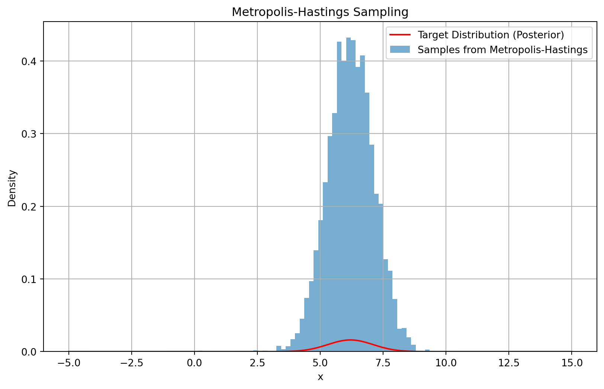

Chapter 5: Inferential Statistics
Population vs. Sample
Definition
Inferential statistics often involve drawing conclusions about a population based on information obtained from a sample. Understanding the distinction between a population and a sample is fundamental to inferential statistics.
Population
A population includes all members of a defined group that we are studying or collecting information on for data-driven decisions. It can be finite or infinite, depending on the context. For instance, the population could be all adult males in a city or all possible outcomes of rolling a fair die.
Sample
A sample is a subset of the population that is selected for the actual study. This subset is used to make inferences about the population due to practical constraints like time, cost, and accessibility. The quality of the sample often determines the reliability of the inferences.
Example
If we are studying the heights of all adult males in a city, the population is all adult males in the city. A sample might be 100 adult males chosen randomly. The sample should ideally represent the population’s characteristics to draw accurate inferences.
Sampling Methods
Simple Random Sampling
Definition
Simple random sampling is a fundamental sampling technique where each member of the population has an equal chance of being included in the sample. This method ensures that the sample is unbiased and representative of the population.
Procedure
Assign a unique number to each member of the population. Use a random number generator or a similar randomization method to select the sample. The selection process should be completely random, without any influence or bias.
Example
Choosing 10 students randomly from a class of 30 students. Each student has an equal probability of being selected, ensuring that the sample is representative of the class.
Show the code
import random
# List of social media usernames (population)
population = ['user1', 'user2', 'user3', 'user4', 'user5',
'user6', 'user7', 'user8', 'user9', 'user10',
'user11', 'user12', 'user13', 'user14', 'user15']
# Number of samples to select
sample_size = 5
# Perform simple random sampling
sample = random.sample(population, sample_size)
# Print the sample
print("Randomly selected sample of", sample_size, "social media usernames:")
print(sample)Randomly selected sample of 5 social media usernames:
['user12', 'user14', 'user9', 'user13', 'user2']Stratified Sampling
Definition
Stratified sampling involves dividing the population into distinct subgroups or strata that share similar characteristics. Samples are then taken from each stratum proportionally. This method ensures that all subgroups are represented in the sample, improving the precision of the estimates.
Procedure
Divide the population into strata based on a characteristic (e.g., age, gender). Then, take a random sample from each stratum. The size of each sample should be proportional to the size of the stratum in the population.
Example
Sampling from different age groups in a population to ensure representation from each age group. For instance, if the population consists of 60% adults and 40% children, the sample should reflect this ratio.
Show the code
import random
# Population (list of individuals with age groups)
population = [
{'name': 'Person1', 'age_group': 'Adult'},
{'name': 'Person2', 'age_group': 'Child'},
{'name': 'Person3', 'age_group': 'Adult'},
{'name': 'Person4', 'age_group': 'Child'},
{'name': 'Person5', 'age_group': 'Adult'},
{'name': 'Person6', 'age_group': 'Adult'},
{'name': 'Person7', 'age_group': 'Child'},
{'name': 'Person8', 'age_group': 'Adult'},
{'name': 'Person9', 'age_group': 'Child'},
{'name': 'Person10', 'age_group': 'Adult'},
{'name': 'Person11', 'age_group': 'Adult'},
{'name': 'Person12', 'age_group': 'Child'},
{'name': 'Person13', 'age_group': 'Child'},
{'name': 'Person14', 'age_group': 'Adult'},
{'name': 'Person15', 'age_group': 'Child'}
]
# Define strata based on age groups
strata = {
'Adult': [],
'Child': []
}
# Assign individuals to respective strata
for person in population:
strata[person['age_group']].append(person)
# Number of samples to select from each stratum
sample_size_per_stratum = {
'Adult': 3, # proportional to 60% of the population
'Child': 2 # proportional to 40% of the population
}
# Perform stratified sampling
sample = []
for stratum, size in sample_size_per_stratum.items():
sample.extend(random.sample(strata[stratum], size))
# Print the sample
print("Stratified sample:")
for person in sample:
print(person['name'], '-', person['age_group'])Stratified sample:
Person8 - Adult
Person1 - Adult
Person11 - Adult
Person15 - Child
Person12 - ChildCluster Sampling
Definition
Cluster sampling involves dividing the population into clusters, usually based on geographical areas or natural groupings, and then randomly selecting entire clusters for the study. This method is useful when the population is large and spread out.
Procedure
Divide the population into clusters (e.g., geographical areas). Randomly select some clusters, and then sample all members within those clusters. This approach can be more practical and cost-effective than simple random sampling, especially for large populations.
Example
Selecting several schools at random from a district and then surveying all students in those schools. This method reduces the cost and time required to collect data from the entire population.
Show the code
import random
# Population (list of schools with students)
population = [
{'school': 'School1', 'students': ['Student1', 'Student2', 'Student3']},
{'school': 'School2', 'students': ['Student4', 'Student5', 'Student6']},
{'school': 'School3', 'students': ['Student7', 'Student8', 'Student9']},
{'school': 'School4', 'students': ['Student10', 'Student11', 'Student12']},
{'school': 'School5', 'students': ['Student13', 'Student14', 'Student15']}
]
# Number of clusters (schools) to select
num_clusters = 2
# Perform cluster sampling
selected_clusters = random.sample(population, num_clusters)
# Collect all students from selected clusters
sample = []
for cluster in selected_clusters:
sample.extend(cluster['students'])
# Print the sample
print("Cluster sample of students:")
print(sample)Cluster sample of students:
['Student7', 'Student8', 'Student9', 'Student1', 'Student2', 'Student3']Systematic Sampling
Definition
Systematic sampling involves selecting every nth member from a list of the population. This method is straightforward and ensures a degree of randomness, although it can introduce bias if there is a hidden pattern in the population list.
Procedure
Arrange the population in some order (e.g., alphabetical, by date). Choose a starting point at random and then select every nth member. The value of n is typically determined by dividing the population size by the desired sample size.
Example
Choosing every 10th person on a list of registered voters. This method is easy to implement and ensures that the sample is spread evenly across the population.
Show the code
import random
# Population (list of individuals)
population = ['Person1', 'Person2', 'Person3', 'Person4', 'Person5',
'Person6', 'Person7', 'Person8', 'Person9', 'Person10',
'Person11', 'Person12', 'Person13', 'Person14', 'Person15',
'Person16', 'Person17', 'Person18', 'Person19', 'Person20']
# Determine sample size
sample_size = 5
# Calculate interval (n)
interval = len(population) // sample_size
# Randomly choose a starting point
start_index = random.randint(0, interval - 1)
# Perform systematic sampling
sample = []
for i in range(start_index, len(population), interval):
sample.append(population[i])
# Print the sample
print("Systematic sample of", sample_size, "individuals:")
print(sample)Systematic sample of 5 individuals:
['Person1', 'Person5', 'Person9', 'Person13', 'Person17']Multistage Sampling
Definition
Multistage sampling involves combining several sampling methods. It typically involves selecting clusters first and then performing further sampling within those clusters.
Procedure
First, divide the population into large clusters. Randomly select clusters, and then perform random or systematic sampling within the selected clusters.
Example
Selecting districts randomly, then schools within those districts, and finally students within those schools for a nationwide educational survey.
Show the code
import random
# Population (list of districts with schools and students)
population = [
{'district': 'District1', 'schools': [
{'school': 'School1', 'students': ['Student1', 'Student2', 'Student3']},
{'school': 'School2', 'students': ['Student4', 'Student5', 'Student6']}
]},
{'district': 'District2', 'schools': [
{'school': 'School3', 'students': ['Student7', 'Student8', 'Student9']},
{'school': 'School4', 'students': ['Student10', 'Student11', 'Student12']}
]},
{'district': 'District3', 'schools': [
{'school': 'School5', 'students': ['Student13', 'Student14', 'Student15']},
{'school': 'School6', 'students': ['Student16', 'Student17', 'Student18']}
]}
]
# Number of districts to select
num_districts = 2
# Perform multistage sampling
selected_districts = random.sample(population, num_districts)
# Collect all students from selected districts and schools
sample = []
for district in selected_districts:
for school in district['schools']:
sample.extend(school['students'])
# Print the sample
print("Multistage sample of students:")
print(sample)Multistage sample of students:
['Student13', 'Student14', 'Student15', 'Student16', 'Student17', 'Student18', 'Student7', 'Student8', 'Student9', 'Student10', 'Student11', 'Student12']Bootstrapping
Definition
Bootstrapping is a resampling technique used to estimate the distribution of a statistic by repeatedly sampling with replacement from the observed data.
Procedure
Generate multiple bootstrap samples by randomly sampling with replacement from the original sample. Calculate the statistic of interest for each bootstrap sample to build a distribution.
Example
Estimating the confidence interval for the mean income of a sample of households by generating thousands of bootstrap samples and calculating the mean for each sample.
Parametric Bootstrap
Definition
Involves resampling based on an assumed parametric distribution of the data.
Example
Assuming the data follows a normal distribution, generate bootstrap samples from this distribution to estimate parameters.
Show the code
import numpy as np
# Sample data (income of households)
sample_data = np.array([30000, 35000, 40000, 45000, 50000, 55000, 60000, 65000, 70000, 75000])
# Number of bootstrap samples
num_bootstrap_samples = 1000
# Generate bootstrap samples and calculate mean for each sample
bootstrap_means = []
for _ in range(num_bootstrap_samples):
bootstrap_sample = np.random.choice(sample_data, size=len(sample_data), replace=True)
bootstrap_mean = np.mean(bootstrap_sample)
bootstrap_means.append(bootstrap_mean)
# Calculate 95% confidence interval
confidence_interval = np.percentile(bootstrap_means, [2.5, 97.5])
# Print results
print("Bootstrap estimated mean income:", np.mean(sample_data))
print("95% Confidence Interval for the mean income:", confidence_interval)Bootstrap estimated mean income: 52500.0
95% Confidence Interval for the mean income: [44000. 61500.]Non-Parametric Bootstrap
Definition
Involves resampling directly from the observed data without assuming any parametric distribution.
Example
Generating bootstrap samples by resampling with replacement directly from the observed data of household incomes.
Show the code
import numpy as np
# Sample data (income of households)
sample_data = np.array([30000, 35000, 40000, 45000, 50000, 55000, 60000, 65000, 70000, 75000])
# Number of bootstrap samples
num_bootstrap_samples = 1000
# Generate bootstrap samples and calculate mean for each sample
bootstrap_means = []
for _ in range(num_bootstrap_samples):
bootstrap_sample = np.random.choice(sample_data, size=len(sample_data), replace=True)
bootstrap_mean = np.mean(bootstrap_sample)
bootstrap_means.append(bootstrap_mean)
# Calculate 95% confidence interval
confidence_interval = np.percentile(bootstrap_means, [2.5, 97.5])
# Print results
print("Bootstrap estimated mean income:", np.mean(sample_data))
print("95% Confidence Interval for the mean income (non-parametric bootstrap):", confidence_interval)Bootstrap estimated mean income: 52500.0
95% Confidence Interval for the mean income (non-parametric bootstrap): [43500. 61000.]Jackknife Resampling
Definition
The jackknife is a resampling technique used to estimate the bias and variance of a statistic. It involves systematically leaving out one observation at a time from the sample set and calculating the statistic for each subsample.
Procedure
Remove one observation from the sample, calculate the statistic for the remaining data, and repeat this process for each observation in the sample.
Example
Estimating the variance of the sample mean by computing the mean for each subsample created by leaving out one observation at a time.
Show the code
import numpy as np
# Sample data (income of households)
sample_data = np.array([30000, 35000, 40000, 45000, 50000, 55000, 60000, 65000, 70000, 75000])
# Number of observations
n = len(sample_data)
# Jackknife resampling to estimate variance of the mean
jackknife_means = []
for i in range(n):
# Create subsample by leaving out one observation
subsample = np.delete(sample_data, i)
# Calculate mean of the subsample
subsample_mean = np.mean(subsample)
# Store mean in jackknife means
jackknife_means.append(subsample_mean)
# Estimate variance of the mean using jackknife
jackknife_variance = (n - 1) / n * np.sum((np.array(jackknife_means) - np.mean(sample_data))**2)
# Print results
print("Jackknife estimated mean income:", np.mean(sample_data))
print("Jackknife estimated variance of the mean income:", jackknife_variance)Jackknife estimated mean income: 52500.0
Jackknife estimated variance of the mean income: 22916666.666666694Importance Sampling
Definition
Importance sampling is a technique used to estimate properties of a particular distribution while only having samples generated from a different distribution.
Procedure
Generate samples from an easy-to-sample distribution, reweight the samples based on the ratio of the target distribution to the sampling distribution, and use these weighted samples to estimate the desired properties.
Example
Estimating the tail probabilities of a complex distribution by sampling from a simpler, related distribution and adjusting the weights accordingly.
Show the code
import numpy as np
# Define the target distribution (complex distribution)
def target_distribution(x):
return np.exp(-x) / (1 + np.exp(-x))**2 # Example complex distribution
# Define the sampling distribution (easy-to-sample distribution)
def sampling_distribution(x):
return np.exp(-x) # Example easier distribution, could be a normal distribution, uniform distribution, etc.
# Number of samples
num_samples = 10000
# Generate samples from the sampling distribution
samples = np.random.exponential(size=num_samples)
# Calculate weights using the ratio of target to sampling distribution
weights = target_distribution(samples) / sampling_distribution(samples)
# Estimate tail probability (e.g., P(X > 5))
tail_probability_estimate = np.mean(weights * (samples > 5))
# Print results
print("Estimated tail probability using importance sampling:", tail_probability_estimate)Estimated tail probability using importance sampling: 0.005659504070675571Reservoir Sampling
Definition
Reservoir sampling is an algorithm for sampling \(k\) items from a large or unknown-sized stream of items.
Procedure
Maintain a reservoir of the first \(k\) items. For each subsequent item in the stream, replace a randomly chosen item in the reservoir with decreasing probability.
Example
Selecting a random sample of 10 elements from a very large file that cannot be loaded into memory.
Show the code
import random
def reservoir_sampling(stream, k):
reservoir = []
n = 0
# Fill the reservoir with the first k elements
for item in stream:
n += 1
if len(reservoir) < k:
reservoir.append(item)
else:
# Randomly replace elements in the reservoir
j = random.randint(0, n - 1)
if j < k:
reservoir[j] = item
return reservoir
# Example usage
if __name__ == "__main__":
# Simulating a large stream of numbers (could be from a file or generator)
stream = range(1000)
# Number of items to sample
k = 10
# Perform reservoir sampling
sampled_items = reservoir_sampling(stream, k)
# Print the sampled items
print("Random sample of", k, "elements:", sampled_items)Random sample of 10 elements: [449, 156, 592, 697, 493, 970, 714, 82, 210, 610]Acceptance-Rejection Sampling
Definition
Acceptance-rejection sampling is a technique used to generate observations from a target distribution by sampling from a proposal distribution and accepting or rejecting the samples based on a criterion.
Procedure
Sample from a proposal distribution and accept the sample with a probability proportional to the ratio of the target density to the proposal density at that sample point.
Example
Generating samples from a complex distribution using a simpler, uniform distribution and accepting samples based on their likelihood ratios.
Show the code
import numpy as np
import matplotlib.pyplot as plt
# Define the target distribution (complex distribution)
def target_distribution(x):
return 0.3 * np.exp(-0.2 * x**2) + 0.7 * np.exp(-0.2 * (x - 10)**2)
# Define the proposal distribution (uniform distribution in this example)
def proposal_distribution(low, high, size=1):
return np.random.uniform(low, high, size)
# Perform acceptance-rejection sampling
def acceptance_rejection_sampling(target_dist, proposal_dist, proposal_low, proposal_high, num_samples):
samples = []
max_target = np.max(target_dist(np.linspace(proposal_low, proposal_high, 1000)))
while len(samples) < num_samples:
x = proposal_dist(proposal_low, proposal_high)
u = np.random.uniform(0, max_target)
if u < target_dist(x):
samples.append(x)
return np.array(samples)
# Parameters
proposal_low = 0
proposal_high = 20
num_samples = 1000
# Generate samples using acceptance-rejection sampling
samples = acceptance_rejection_sampling(target_distribution, proposal_distribution, proposal_low, proposal_high, num_samples)
# Plotting
plt.figure(figsize=(8, 6))
x_vals = np.linspace(proposal_low, proposal_high, 1000)
plt.plot(x_vals, target_distribution(x_vals), label='Target Distribution')
plt.hist(samples, bins=30, density=True, alpha=0.7, label='Samples from Target Distribution')
plt.title('Acceptance-Rejection Sampling')
plt.xlabel('x')
plt.ylabel('Density')
plt.legend()
plt.show()Gibbs Sampling
Definition
Gibbs sampling is a Markov Chain Monte Carlo (MCMC) algorithm used to generate samples from a multivariate probability distribution by iteratively sampling from the conditional distributions of each variable.
Procedure
Iteratively sample each variable from its conditional distribution given the current values of the other variables.
Example
Sampling from a joint distribution of multiple correlated variables, such as in Bayesian networks or spatial statistics.
Show the code
import numpy as np
import matplotlib.pyplot as plt
# Define parameters for the bivariate normal distribution
mean = np.array([5, 10])
covariance = np.array([[1, 0.7], [0.7, 1]])
# Function to sample from conditional distribution of X1 given X2
def sample_X1_given_X2(x2):
mean_x1_given_x2 = mean[0] + covariance[0, 1] / covariance[1, 1] * (x2 - mean[1])
variance_x1_given_x2 = covariance[0, 0] - covariance[0, 1] / covariance[1, 1] * covariance[1, 0]
return np.random.normal(mean_x1_given_x2, np.sqrt(variance_x1_given_x2))
# Function to sample from conditional distribution of X2 given X1
def sample_X2_given_X1(x1):
mean_x2_given_x1 = mean[1] + covariance[1, 0] / covariance[0, 0] * (x1 - mean[0])
variance_x2_given_x1 = covariance[1, 1] - covariance[1, 0] / covariance[0, 0] * covariance[0, 1]
return np.random.normal(mean_x2_given_x1, np.sqrt(variance_x2_given_x1))
# Gibbs sampling function
def gibbs_sampling(initial_state, num_samples, burn_in=100):
samples = np.zeros((num_samples, 2))
current_state = initial_state
for i in range(num_samples + burn_in):
current_state[0] = sample_X1_given_X2(current_state[1])
current_state[1] = sample_X2_given_X1(current_state[0])
if i >= burn_in:
samples[i - burn_in] = current_state
return samples
# Initial state
initial_state = np.array([0, 0])
# Number of samples to generate
num_samples = 1000
# Perform Gibbs sampling
samples = gibbs_sampling(initial_state, num_samples)
# Plotting
plt.figure(figsize=(8, 6))
plt.scatter(samples[:, 0], samples[:, 1], alpha=0.6, label='Samples')
plt.title('Gibbs Sampling for Bivariate Normal Distribution')
plt.xlabel('X1')
plt.ylabel('X2')
plt.legend()
plt.grid(True)
plt.show()
Metropolis-Hastings Algorithm
Definition
The Metropolis-Hastings algorithm is an MCMC method used to obtain a sequence of random samples from a probability distribution for which direct sampling is difficult.
Procedure
Generate a candidate sample from a proposal distribution, accept or reject the candidate based on a criterion involving the ratio of the target distribution densities, and repeat this process to generate a chain of samples.
Example
Sampling from a posterior distribution in Bayesian inference where the likelihood and prior are complex.
Show the code
import numpy as np
import matplotlib.pyplot as plt
from scipy.stats import norm
# Target distribution (posterior)
def target_distribution(x):
return norm.pdf(x, loc=3, scale=2) * norm.pdf(x, loc=7, scale=1)
# Proposal distribution (normal distribution)
def proposal_distribution(x, sigma):
return np.random.normal(x, sigma)
# Metropolis-Hastings algorithm
def metropolis_hastings(num_samples, sigma):
samples = np.zeros(num_samples)
current_sample = np.random.normal(0, 1) # Start from a random initial point
for i in range(num_samples):
candidate = proposal_distribution(current_sample, sigma)
acceptance_ratio = target_distribution(candidate) / target_distribution(current_sample)
if np.random.rand() < acceptance_ratio:
current_sample = candidate
samples[i] = current_sample
return samples
# Parameters
num_samples = 10000 # Number of samples to generate
sigma = 1.0 # Standard deviation of the proposal distribution
# Perform Metropolis-Hastings sampling
samples = metropolis_hastings(num_samples, sigma)
# Plotting
plt.figure(figsize=(10, 6))
x = np.linspace(-5, 15, 500)
plt.plot(x, target_distribution(x), 'r-', label='Target Distribution (Posterior)')
plt.hist(samples, bins=50, density=True, alpha=0.6, label='Samples from Metropolis-Hastings')
plt.title('Metropolis-Hastings Sampling')
plt.xlabel('x')
plt.ylabel('Density')
plt.legend()
plt.grid(True)
plt.show()
Quota Sampling
Definition
Quota sampling involves dividing the population into subgroups and then taking a non-random sample from each subgroup to ensure that the sample represents certain characteristics of the population.
Procedure
Define quotas for each subgroup based on characteristics such as age, gender, or income. Select participants non-randomly until the quotas are met.
Example
Ensuring that a survey sample matches the population demographics by setting quotas for age groups, genders, and income levels.
Show the code
import pandas as pd
import numpy as np
# Step 1: Define the Population
np.random.seed(42) # For reproducibility
# Create a synthetic dataset
population_size = 1000
population = pd.DataFrame({
'age': np.random.choice(['18-25', '26-35', '36-45', '46-60', '60+'], size=population_size),
'gender': np.random.choice(['Male', 'Female'], size=population_size),
'income': np.random.choice(['Low', 'Medium', 'High'], size=population_size)
})
# Display the first few rows of the population dataset
print("Population Data:")
print(population.head())
# Step 2: Define Quotas
quotas = {
'age': {'18-25': 50, '26-35': 50, '36-45': 50, '46-60': 50, '60+': 50},
'gender': {'Male': 125, 'Female': 125},
'income': {'Low': 50, 'Medium': 100, 'High': 100}
}
# Step 3: Select Participants
sample = pd.DataFrame(columns=population.columns)
for feature, quota in quotas.items():
for category, count in quota.items():
selected = population[population[feature] == category].sample(n=count, replace=False)
sample = pd.concat([sample, selected])
population = population.drop(selected.index)
# Reset the index of the sample
sample.reset_index(drop=True, inplace=True)
# Display the first few rows of the sample dataset
print("\nSample Data:")
print(sample.head())
# Display the distribution of the sample to verify quotas
print("\nSample Distribution:")
print(sample.groupby(['age', 'gender', 'income']).size())Population Data:
age gender income
0 46-60 Female High
1 60+ Female Low
2 36-45 Female High
3 60+ Female Low
4 60+ Female High
Sample Data:
age gender income
0 18-25 Male High
1 18-25 Male Medium
2 18-25 Female Medium
3 18-25 Female High
4 18-25 Female Medium
Sample Distribution:
age gender income
18-25 Female High 27
Low 18
Medium 29
Male High 37
Low 17
Medium 24
26-35 Female High 27
Low 14
Medium 24
Male High 26
Low 19
Medium 28
36-45 Female High 13
Low 35
Medium 30
Male High 17
Low 25
Medium 26
46-60 Female High 26
Low 25
Medium 26
Male High 23
Low 20
Medium 35
60+ Female High 31
Low 30
Medium 22
Male High 27
Low 25
Medium 24
dtype: int64Snowball Sampling
Definition
Snowball sampling is a non-probability sampling technique where existing study subjects recruit future subjects from among their acquaintances.
Procedure
Initial subjects are selected and asked to recruit additional participants. This process continues until the desired sample size is reached.
Example
Studying hidden or hard-to-reach populations, such as drug users or undocumented immigrants, by leveraging social networks.
Show the code
import pandas as pd
import numpy as np
import networkx as nx
import random
# Step 1: Define the Population
np.random.seed(42) # For reproducibility
# Create a synthetic dataset
population_size = 1000
population = pd.DataFrame({
'id': range(population_size),
'name': [f'Person_{i}' for i in range(population_size)],
'hidden_population': np.random.choice([True, False], size=population_size, p=[0.1, 0.9]) # 10% hidden population
})
# Create a social network graph
G = nx.erdos_renyi_graph(population_size, 0.05, seed=42)
nx.set_node_attributes(G, population.set_index('id').to_dict('index'))
# Step 2: Initial Subjects
initial_subjects = random.sample([n for n, d in G.nodes(data=True) if d['hidden_population']], 5) # Start with 5 hidden individuals
# Step 3: Recruit Additional Participants
sample = set(initial_subjects)
new_recruits = set(initial_subjects)
while len(sample) < 50: # Desired sample size
next_recruits = set()
for subject in new_recruits:
neighbors = list(G.neighbors(subject))
hidden_neighbors = [n for n in neighbors if G.nodes[n]['hidden_population']]
next_recruits.update(hidden_neighbors)
new_recruits = next_recruits - sample
sample.update(new_recruits)
if not new_recruits: # If no new recruits can be found, break the loop
break
# Convert sample to DataFrame
sample_df = pd.DataFrame([G.nodes[n] for n in sample])
# Display the sample
print("Sample Data:")
print(sample_df)
# Display the size of the sample
print("\nSample Size:")
print(len(sample_df))Sample Data:
name hidden_population
0 Person_514 True
1 Person_259 True
2 Person_515 True
3 Person_6 True
4 Person_10 True
.. ... ...
73 Person_476 True
74 Person_222 True
75 Person_486 True
76 Person_244 True
77 Person_764 True
[78 rows x 2 columns]
Sample Size:
78Adaptive Sampling
Definition
Adaptive sampling is a technique where the sampling scheme is adjusted based on the observed data during the survey process.
Procedure
Start with an initial sample, analyze the data, and adjust the sampling plan to focus on areas or strata with higher variability or interest.
Example
Environmental surveys where initial data indicates regions of higher biodiversity, prompting increased sampling efforts in those regions.
Show the code
import numpy as np
import pandas as pd
import matplotlib.pyplot as plt
import seaborn as sns
# Set random seed for reproducibility
np.random.seed(42)
# Step 1: Define the Environment
def create_environment(size=100):
"""Create a 2D environment with varying biodiversity levels"""
env = np.zeros((size, size))
# Create some hotspots of biodiversity
env[20:40, 20:40] = np.random.normal(10, 2, (20, 20))
env[60:80, 60:80] = np.random.normal(15, 3, (20, 20))
env += np.abs(np.random.normal(0, 1, (size, size))) # Add some noise
return env
environment = create_environment()
# Step 2: Initial Sampling
def initial_sampling(env, sample_size=100):
"""Take initial random samples"""
x = np.random.randint(0, env.shape[0], sample_size)
y = np.random.randint(0, env.shape[1], sample_size)
biodiversity = env[x, y]
return pd.DataFrame({'x': x, 'y': y, 'biodiversity': biodiversity})
initial_samples = initial_sampling(environment)
# Step 3: Analyze Data
def identify_hotspots(samples, threshold):
"""Identify areas of high biodiversity"""
return samples[samples['biodiversity'] > threshold]
hotspots = identify_hotspots(initial_samples, threshold=np.percentile(initial_samples['biodiversity'], 75))
# Step 4: Adjust Sampling Plan
def adaptive_sampling(env, hotspots, additional_samples=100):
"""Take additional samples near identified hotspots"""
new_samples = []
for _, hotspot in hotspots.iterrows():
x = np.random.normal(hotspot['x'], 5, additional_samples // len(hotspots))
y = np.random.normal(hotspot['y'], 5, additional_samples // len(hotspots))
x = np.clip(x, 0, env.shape[0] - 1).astype(int)
y = np.clip(y, 0, env.shape[1] - 1).astype(int)
biodiversity = env[x, y]
new_samples.append(pd.DataFrame({'x': x, 'y': y, 'biodiversity': biodiversity}))
return pd.concat(new_samples)
additional_samples = adaptive_sampling(environment, hotspots)
# Combine all samples
all_samples = pd.concat([initial_samples, additional_samples])
# Step 5: Final Analysis
def plot_results(env, initial, additional, all_samples):
fig, axs = plt.subplots(2, 2, figsize=(15, 15))
sns.heatmap(env, ax=axs[0, 0], cmap='viridis')
axs[0, 0].set_title('True Environment')
axs[0, 1].scatter(initial['x'], initial['y'], c=initial['biodiversity'], cmap='viridis')
axs[0, 1].set_title('Initial Sampling')
axs[1, 0].scatter(additional['x'], additional['y'], c=additional['biodiversity'], cmap='viridis')
axs[1, 0].set_title('Adaptive Sampling')
axs[1, 1].scatter(all_samples['x'], all_samples['y'], c=all_samples['biodiversity'], cmap='viridis')
axs[1, 1].set_title('All Samples')
plt.tight_layout()
plt.show()
plot_results(environment, initial_samples, additional_samples, all_samples)
print(f"Initial samples: {len(initial_samples)}")
print(f"Additional samples: {len(additional_samples)}")
print(f"Total samples: {len(all_samples)}")
print(f"Average biodiversity (initial): {initial_samples['biodiversity'].mean():.2f}")
print(f"Average biodiversity (all): {all_samples['biodiversity'].mean():.2f}")Initial samples: 100
Additional samples: 100
Total samples: 200
Average biodiversity (initial): 1.47
Average biodiversity (all): 2.19Sampling Distributions and Central Limit Theorem
Sampling Distributions
Definition
A sampling distribution is the probability distribution of a given statistic based on a random sample. It describes how the statistic would vary if we repeated the sampling process many times.
Properties
The mean of the sampling distribution of the sample mean is equal to the population mean. This property, known as the unbiasedness of the sample mean, ensures that on average, the sample mean is a good estimator of the population mean.
The standard deviation of the sampling distribution (standard error) is equal to the population standard deviation divided by the square root of the sample size. This property indicates how much the sample mean would vary from sample to sample.
Example
If you repeatedly sample the heights of 30 students from a large population and calculate the mean each time, the distribution of those means is the sampling distribution of the sample mean. This distribution helps in understanding the variability of the sample mean.
Show the code
import numpy as np
import pandas as pd
import matplotlib.pyplot as plt
import seaborn as sns
from scipy import stats
# Set random seed for reproducibility
np.random.seed(42)
# Step 1: Define the population
population_size = 100000
population = stats.norm.rvs(loc=170, scale=10, size=population_size) # Normal distribution with mean 170 and std 10
# Step 2: Function to draw samples and calculate sample means
def draw_samples(population, sample_size, num_samples):
sample_means = []
for _ in range(num_samples):
sample = np.random.choice(population, size=sample_size, replace=False)
sample_means.append(np.mean(sample))
return np.array(sample_means)
# Step 3: Draw samples and calculate sample means
sample_size = 30
num_samples = 10000
sample_means = draw_samples(population, sample_size, num_samples)
# Step 4: Calculate theoretical properties
population_mean = np.mean(population)
population_std = np.std(population)
theoretical_std_error = population_std / np.sqrt(sample_size)
# Step 5: Calculate observed properties
observed_mean = np.mean(sample_means)
observed_std_error = np.std(sample_means)
# Step 6: Visualize the sampling distribution
plt.figure(figsize=(12, 6))
# Histogram of sample means
sns.histplot(sample_means, kde=True, stat="density", label="Observed Distribution")
# Theoretical normal distribution
x = np.linspace(min(sample_means), max(sample_means), 100)
y = stats.norm.pdf(x, loc=population_mean, scale=theoretical_std_error)
plt.plot(x, y, 'r-', label="Theoretical Distribution")
plt.title(f"Sampling Distribution of the Sample Mean (n={sample_size})")
plt.xlabel("Sample Mean")
plt.ylabel("Density")
plt.legend()
# Add vertical lines for means
plt.axvline(population_mean, color='g', linestyle='--', label="Population Mean")
plt.axvline(observed_mean, color='b', linestyle='--', label="Observed Mean of Samples")
plt.legend()
plt.show()
# Step 7: Print results
print(f"Population Mean: {population_mean:.2f}")
print(f"Observed Mean of Sample Means: {observed_mean:.2f}")
print(f"Population Standard Deviation: {population_std:.2f}")
print(f"Theoretical Standard Error: {theoretical_std_error:.2f}")
print(f"Observed Standard Error: {observed_std_error:.2f}")/Users/ravishankar/miniforge3/lib/python3.10/site-packages/seaborn/_oldcore.py:1119: FutureWarning:
use_inf_as_na option is deprecated and will be removed in a future version. Convert inf values to NaN before operating instead.
Population Mean: 170.01
Observed Mean of Sample Means: 170.02
Population Standard Deviation: 10.01
Theoretical Standard Error: 1.83
Observed Standard Error: 1.82Central Limit Theorem
Definition
The Central Limit Theorem (CLT) states that the distribution of the sample means approaches a normal distribution as the sample size grows, regardless of the population’s distribution. This theorem is fundamental in inferential statistics as it allows for the use of normal probability methods.
Implications
Allows us to use normal probability methods for inference even if the population is not normally distributed, provided the sample size is large enough. This is particularly useful for hypothesis testing and constructing confidence intervals.
Sample size of 30 is often considered sufficient for the CLT to hold. However, the required sample size can be larger for populations with extreme skewness or heavy tails.
Example
If you take many samples of size 50 from a skewed population and plot the sample means, the resulting distribution will be approximately normal. This approximation enables the use of normal distribution properties to make inferences about the population mean.
Show the code
import numpy as np
import pandas as pd
import matplotlib.pyplot as plt
import seaborn as sns
from scipy import stats
# Set random seed for reproducibility
np.random.seed(42)
# Step 1: Define the population (exponential distribution)
population_size = 100000
population = np.random.exponential(scale=1.0, size=population_size)
# Step 2: Function to draw samples and calculate sample means
def draw_samples(population, sample_size, num_samples):
sample_means = []
for _ in range(num_samples):
sample = np.random.choice(population, size=sample_size, replace=False)
sample_means.append(np.mean(sample))
return np.array(sample_means)
# Step 3: Draw samples for different sample sizes
sample_sizes = [5, 30, 100]
num_samples = 10000
# Step 4: Create subplots
fig, axs = plt.subplots(len(sample_sizes), 2, figsize=(15, 5*len(sample_sizes)))
fig.suptitle("Central Limit Theorem Demonstration", fontsize=16)
for i, sample_size in enumerate(sample_sizes):
sample_means = draw_samples(population, sample_size, num_samples)
# Plot histogram of sample means
sns.histplot(sample_means, kde=True, stat="density", ax=axs[i, 0])
axs[i, 0].set_title(f"Distribution of Sample Means (n={sample_size})")
axs[i, 0].set_xlabel("Sample Mean")
axs[i, 0].set_ylabel("Density")
# Plot Q-Q plot
stats.probplot(sample_means, dist="norm", plot=axs[i, 1])
axs[i, 1].set_title(f"Q-Q Plot (n={sample_size})")
# Calculate and display statistics
mean = np.mean(sample_means)
std = np.std(sample_means)
skew = stats.skew(sample_means)
kurtosis = stats.kurtosis(sample_means)
stats_text = f"Mean: {mean:.4f}\nStd Dev: {std:.4f}\nSkewness: {skew:.4f}\nKurtosis: {kurtosis:.4f}"
axs[i, 0].text(0.95, 0.95, stats_text, transform=axs[i, 0].transAxes,
verticalalignment='top', horizontalalignment='right',
bbox=dict(boxstyle='round', facecolor='white', alpha=0.8))
plt.tight_layout()
plt.show()
# Step 5: Print population statistics
pop_mean = np.mean(population)
pop_std = np.std(population)
pop_skew = stats.skew(population)
pop_kurtosis = stats.kurtosis(population)
print("Population Statistics:")
print(f"Mean: {pop_mean:.4f}")
print(f"Standard Deviation: {pop_std:.4f}")
print(f"Skewness: {pop_skew:.4f}")
print(f"Kurtosis: {pop_kurtosis:.4f}")/Users/ravishankar/miniforge3/lib/python3.10/site-packages/seaborn/_oldcore.py:1119: FutureWarning:
use_inf_as_na option is deprecated and will be removed in a future version. Convert inf values to NaN before operating instead.
/Users/ravishankar/miniforge3/lib/python3.10/site-packages/seaborn/_oldcore.py:1119: FutureWarning:
use_inf_as_na option is deprecated and will be removed in a future version. Convert inf values to NaN before operating instead.
/Users/ravishankar/miniforge3/lib/python3.10/site-packages/seaborn/_oldcore.py:1119: FutureWarning:
use_inf_as_na option is deprecated and will be removed in a future version. Convert inf values to NaN before operating instead.
Population Statistics:
Mean: 0.9960
Standard Deviation: 0.9930
Skewness: 1.9921
Kurtosis: 5.9284Confidence Intervals
Definition
Confidence intervals provide a range of values within which the population parameter is expected to lie with a certain confidence level. They offer an estimate of the parameter and convey the uncertainty associated with the estimate.
Components
Point Estimate: The sample statistic (e.g., sample mean) used to estimate the population parameter. It is the best single estimate of the parameter.
Margin of Error: The range within which the true population parameter is expected to lie. It reflects the precision of the estimate and is influenced by the sample size and variability.
Confidence Level: The probability that the interval contains the population parameter (e.g., 95%). It indicates the degree of confidence we have that the interval includes the true parameter.
For Means
Formula
\[ \text{CI} = \bar{x} \pm z \left( \frac{\sigma}{\sqrt{n}} \right) \] where \(\bar{x}\) is the sample mean, \(z\) is the critical value from the standard normal distribution, \(\sigma\) is the population standard deviation, and \(n\) is the sample size.
Example
95% CI for the mean height of a sample of 100 students with a mean height of 170 cm and a standard deviation of 10 cm: 170 ± 1.96*(10/√100) = 170 ± 1.96. This interval suggests that we are 95% confident that the true mean height of the population lies between 168.04 cm and 171.96 cm.
Show the code
import numpy as np
import pandas as pd
import matplotlib.pyplot as plt
import seaborn as sns
from scipy import stats
# Set random seed for reproducibility
np.random.seed(42)
# Step 1: Define the population
population_mean = 170 # cm
population_std = 10 # cm
population_size = 100000
population = stats.norm.rvs(loc=population_mean, scale=population_std, size=population_size)
# Step 2: Function to calculate confidence interval
def calculate_ci(sample, confidence=0.95):
sample_mean = np.mean(sample)
sample_std = np.std(sample, ddof=1) # ddof=1 for sample standard deviation
sample_size = len(sample)
margin_of_error = stats.t.ppf((1 + confidence) / 2, df=sample_size-1) * (sample_std / np.sqrt(sample_size))
ci_lower = sample_mean - margin_of_error
ci_upper = sample_mean + margin_of_error
return sample_mean, ci_lower, ci_upper
# Step 3: Draw samples and calculate confidence intervals
sample_size = 100
num_samples = 100
confidence_level = 0.95
results = []
for _ in range(num_samples):
sample = np.random.choice(population, size=sample_size, replace=False)
sample_mean, ci_lower, ci_upper = calculate_ci(sample, confidence=confidence_level)
results.append({
'Sample Mean': sample_mean,
'CI Lower': ci_lower,
'CI Upper': ci_upper,
'Contains True Mean': ci_lower <= population_mean <= ci_upper
})
results_df = pd.DataFrame(results)
# Step 4: Visualize the results
plt.figure(figsize=(12, 6))
# Plot confidence intervals
for i, (_, row) in enumerate(results_df.iterrows()):
color = 'green' if row['Contains True Mean'] else 'red'
plt.plot([i, i], [row['CI Lower'], row['CI Upper']], color=color, alpha=0.5)
plt.plot(i, row['Sample Mean'], 'o', color=color, alpha=0.5)
# Plot true population mean
plt.axhline(y=population_mean, color='blue', linestyle='--', label='True Population Mean')
plt.title(f"{confidence_level*100}% Confidence Intervals for {num_samples} Samples")
plt.xlabel("Sample Number")
plt.ylabel("Height (cm)")
plt.ylim(160, 180)
plt.legend()
plt.show()
# Step 5: Print summary statistics
coverage_probability = results_df['Contains True Mean'].mean()
average_ci_width = (results_df['CI Upper'] - results_df['CI Lower']).mean()
print(f"True Population Mean: {population_mean:.2f} cm")
print(f"True Population Standard Deviation: {population_std:.2f} cm")
print(f"Sample Size: {sample_size}")
print(f"Number of Samples: {num_samples}")
print(f"Confidence Level: {confidence_level*100}%")
print(f"Observed Coverage Probability: {coverage_probability:.2%}")
print(f"Average CI Width: {average_ci_width:.2f} cm")True Population Mean: 170.00 cm
True Population Standard Deviation: 10.00 cm
Sample Size: 100
Number of Samples: 100
Confidence Level: 95.0%
Observed Coverage Probability: 98.00%
Average CI Width: 3.98 cmFor Proportions
Formula
\[ \text{CI} = \hat{p} \pm z \sqrt{ \frac{\hat{p}(1-\hat{p})}{n} } \] where \(\hat{p}\) is the sample proportion, \(z\) is the critical value from the standard normal distribution, and \(n\) is the sample size.
Example
95% CI for the proportion of voters favoring a candidate in a sample of 1000 with 600 in favor: 0.6 ± 1.96√(0.60.4/1000) = 0.6 ± 0.03. This interval suggests that we are 95% confident that the true proportion of voters favoring the candidate lies between 0.57 and 0.63.
Show the code
import numpy as np
import pandas as pd
import matplotlib.pyplot as plt
import seaborn as sns
from scipy import stats
# Set random seed for reproducibility
np.random.seed(42)
# Step 1: Define the population
population_size = 100000
population_proportion = 0.6 # 60% in favor
population = np.random.choice([0, 1], size=population_size, p=[1-population_proportion, population_proportion])
# Step 2: Function to calculate confidence interval for proportion
def calculate_ci_proportion(sample, confidence=0.95):
sample_proportion = np.mean(sample)
sample_size = len(sample)
z_score = stats.norm.ppf((1 + confidence) / 2)
margin_of_error = z_score * np.sqrt((sample_proportion * (1 - sample_proportion)) / sample_size)
ci_lower = max(0, sample_proportion - margin_of_error)
ci_upper = min(1, sample_proportion + margin_of_error)
return sample_proportion, ci_lower, ci_upper
# Step 3: Draw samples and calculate confidence intervals
sample_size = 1000
num_samples = 100
confidence_level = 0.95
results = []
for _ in range(num_samples):
sample = np.random.choice(population, size=sample_size, replace=False)
sample_proportion, ci_lower, ci_upper = calculate_ci_proportion(sample, confidence=confidence_level)
results.append({
'Sample Proportion': sample_proportion,
'CI Lower': ci_lower,
'CI Upper': ci_upper,
'Contains True Proportion': ci_lower <= population_proportion <= ci_upper
})
results_df = pd.DataFrame(results)
# Step 4: Visualize the results
plt.figure(figsize=(12, 6))
# Plot confidence intervals
for i, (_, row) in enumerate(results_df.iterrows()):
color = 'green' if row['Contains True Proportion'] else 'red'
plt.plot([i, i], [row['CI Lower'], row['CI Upper']], color=color, alpha=0.5)
plt.plot(i, row['Sample Proportion'], 'o', color=color, alpha=0.5)
# Plot true population proportion
plt.axhline(y=population_proportion, color='blue', linestyle='--', label='True Population Proportion')
plt.title(f"{confidence_level*100}% Confidence Intervals for {num_samples} Samples")
plt.xlabel("Sample Number")
plt.ylabel("Proportion")
plt.ylim(0.5, 0.7)
plt.legend()
plt.show()
# Step 5: Print summary statistics
coverage_probability = results_df['Contains True Proportion'].mean()
average_ci_width = (results_df['CI Upper'] - results_df['CI Lower']).mean()
print(f"True Population Proportion: {population_proportion:.2f}")
print(f"Sample Size: {sample_size}")
print(f"Number of Samples: {num_samples}")
print(f"Confidence Level: {confidence_level*100}%")
print(f"Observed Coverage Probability: {coverage_probability:.2%}")
print(f"Average CI Width: {average_ci_width:.4f}")
# Step 6: Calculate theoretical margin of error
theoretical_margin_of_error = stats.norm.ppf((1 + confidence_level) / 2) * np.sqrt((population_proportion * (1 - population_proportion)) / sample_size)
print(f"Theoretical Margin of Error: {theoretical_margin_of_error:.4f}")True Population Proportion: 0.60
Sample Size: 1000
Number of Samples: 100
Confidence Level: 95.0%
Observed Coverage Probability: 97.00%
Average CI Width: 0.0607
Theoretical Margin of Error: 0.0304For Variances
Formula
\[ \text{CI} = \left[ \frac{(n-1)s^2}{\chi^2_{\alpha/2, n-1}}, \frac{(n-1)s^2}{\chi^2_{1-\alpha/2, n-1}} \right] \] where \(s^2\) is the sample variance, \(n\) is the sample size, and \(\chi^2\) are the critical values from the chi-square distribution.
Example
95% CI for the variance of a sample of 20 with a sample variance of 4: [194/χ²(0.025,19), 194/χ²(0.975,19)] = [2.51, 8.89]. This interval suggests that we are 95% confident that the true variance lies between 2.51 and 8.89.
Show the code
import numpy as np
import pandas as pd
import matplotlib.pyplot as plt
import seaborn as sns
from scipy import stats
# Set random seed for reproducibility
np.random.seed(42)
# Step 1: Define the population
population_mean = 0
population_std = 2 # population standard deviation
population_var = population_std**2 # population variance
population_size = 100000
population = stats.norm.rvs(loc=population_mean, scale=population_std, size=population_size)
# Step 2: Function to calculate confidence interval for variance
def calculate_ci_variance(sample, confidence=0.95):
sample_size = len(sample)
sample_var = np.var(sample, ddof=1) # ddof=1 for sample variance
chi2_lower = stats.chi2.ppf((1 - confidence) / 2, df=sample_size - 1)
chi2_upper = stats.chi2.ppf((1 + confidence) / 2, df=sample_size - 1)
ci_lower = (sample_size - 1) * sample_var / chi2_upper
ci_upper = (sample_size - 1) * sample_var / chi2_lower
return sample_var, ci_lower, ci_upper
# Step 3: Draw samples and calculate confidence intervals
sample_size = 20
num_samples = 100
confidence_level = 0.95
results = []
for _ in range(num_samples):
sample = np.random.choice(population, size=sample_size, replace=False)
sample_var, ci_lower, ci_upper = calculate_ci_variance(sample, confidence=confidence_level)
results.append({
'Sample Variance': sample_var,
'CI Lower': ci_lower,
'CI Upper': ci_upper,
'Contains True Variance': ci_lower <= population_var <= ci_upper
})
results_df = pd.DataFrame(results)
# Step 4: Visualize the results
plt.figure(figsize=(12, 6))
# Plot confidence intervals
for i, (_, row) in enumerate(results_df.iterrows()):
color = 'green' if row['Contains True Variance'] else 'red'
plt.plot([i, i], [row['CI Lower'], row['CI Upper']], color=color, alpha=0.5)
plt.plot(i, row['Sample Variance'], 'o', color=color, alpha=0.5)
# Plot true population variance
plt.axhline(y=population_var, color='blue', linestyle='--', label='True Population Variance')
plt.title(f"{confidence_level*100}% Confidence Intervals for Variance ({num_samples} Samples)")
plt.xlabel("Sample Number")
plt.ylabel("Variance")
plt.ylim(0, 10)
plt.legend()
plt.show()
# Step 5: Print summary statistics
coverage_probability = results_df['Contains True Variance'].mean()
average_ci_width = (results_df['CI Upper'] - results_df['CI Lower']).mean()
print(f"True Population Variance: {population_var:.2f}")
print(f"Sample Size: {sample_size}")
print(f"Number of Samples: {num_samples}")
print(f"Confidence Level: {confidence_level*100}%")
print(f"Observed Coverage Probability: {coverage_probability:.2%}")
print(f"Average CI Width: {average_ci_width:.4f}")
# Step 6: Calculate theoretical CI for a specific sample
specific_sample = np.random.choice(population, size=sample_size, replace=False)
specific_sample_var, specific_ci_lower, specific_ci_upper = calculate_ci_variance(specific_sample, confidence=confidence_level)
print(f"\nExample for a specific sample:")
print(f"Sample Variance: {specific_sample_var:.4f}")
print(f"95% CI: [{specific_ci_lower:.4f}, {specific_ci_upper:.4f}]")
True Population Variance: 4.00
Sample Size: 20
Number of Samples: 100
Confidence Level: 95.0%
Observed Coverage Probability: 96.00%
Average CI Width: 6.0136
Example for a specific sample:
Sample Variance: 2.1125
95% CI: [1.2217, 4.5065]One-Sample and Two-Sample Cases
One-Sample
Confidence intervals for a single sample statistic provide an estimate of the population parameter based on the sample data. This is useful for determining the mean, proportion, or variance of a single group.
Two-Sample
Confidence intervals for the difference between two sample statistics compare two groups. This is useful for determining if there is a significant difference between the means, proportions, or variances of two independent samples.
Example
Comparing the means of two different classes’ test scores. If the 95% CI for the difference between the mean scores of Class A and Class B is [2, 10], we can be 95% confident that the mean score of Class A is between 2 and 10 points higher than that of Class B.
One-Sample CI
Show the code
import numpy as np
import pandas as pd
import matplotlib.pyplot as plt
import seaborn as sns
from scipy import stats
# Set random seed for reproducibility
np.random.seed(42)
# Step 1: Define the population
population_mean = 70
population_std = 10
population_size = 100000
population = stats.norm.rvs(loc=population_mean, scale=population_std, size=population_size)
# Step 2: Draw a sample
sample_size = 100
sample = np.random.choice(population, size=sample_size, replace=False)
# Step 3: Calculate one-sample confidence interval
def calculate_one_sample_ci(sample, confidence=0.95):
sample_mean = np.mean(sample)
sample_std = np.std(sample, ddof=1)
sample_size = len(sample)
margin_of_error = stats.t.ppf((1 + confidence) / 2, df=sample_size-1) * (sample_std / np.sqrt(sample_size))
ci_lower = sample_mean - margin_of_error
ci_upper = sample_mean + margin_of_error
return sample_mean, ci_lower, ci_upper
sample_mean, ci_lower, ci_upper = calculate_one_sample_ci(sample)
# Step 4: Print results
print(f"Sample Mean: {sample_mean:.2f}")
print(f"95% Confidence Interval: [{ci_lower:.2f}, {ci_upper:.2f}]")
# Step 5: Visualize the results
plt.figure(figsize=(8, 4))
sns.histplot(sample, kde=True, stat="density", label="Sample Distribution")
plt.axvline(sample_mean, color='red', linestyle='--', label='Sample Mean')
plt.axvline(ci_lower, color='green', linestyle='--', label='95% CI Lower Bound')
plt.axvline(ci_upper, color='green', linestyle='--', label='95% CI Upper Bound')
plt.title("One-Sample Confidence Interval for Mean")
plt.xlabel("Value")
plt.ylabel("Density")
plt.legend()
plt.show()Sample Mean: 69.89
95% Confidence Interval: [67.80, 71.97]/Users/ravishankar/miniforge3/lib/python3.10/site-packages/seaborn/_oldcore.py:1119: FutureWarning:
use_inf_as_na option is deprecated and will be removed in a future version. Convert inf values to NaN before operating instead.
Two-Sample CI
Show the code
# Step 1: Define the populations
population_mean_A = 70
population_std_A = 10
population_mean_B = 65
population_std_B = 12
population_size = 100000
population_A = stats.norm.rvs(loc=population_mean_A, scale=population_std_A, size=population_size)
population_B = stats.norm.rvs(loc=population_mean_B, scale=population_std_B, size=population_size)
# Step 2: Draw samples
sample_size = 100
sample_A = np.random.choice(population_A, size=sample_size, replace=False)
sample_B = np.random.choice(population_B, size=sample_size, replace=False)
# Step 3: Calculate two-sample confidence interval for the difference in means
def calculate_two_sample_ci(sample_A, sample_B, confidence=0.95):
mean_A = np.mean(sample_A)
mean_B = np.mean(sample_B)
var_A = np.var(sample_A, ddof=1)
var_B = np.var(sample_B, ddof=1)
size_A = len(sample_A)
size_B = len(sample_B)
mean_diff = mean_A - mean_B
se_diff = np.sqrt((var_A / size_A) + (var_B / size_B))
margin_of_error = stats.t.ppf((1 + confidence) / 2, df=min(size_A, size_B)-1) * se_diff
ci_lower = mean_diff - margin_of_error
ci_upper = mean_diff + margin_of_error
return mean_diff, ci_lower, ci_upper
mean_diff, ci_lower, ci_upper = calculate_two_sample_ci(sample_A, sample_B)
# Step 4: Print results
print(f"Mean Difference: {mean_diff:.2f}")
print(f"95% Confidence Interval for Difference: [{ci_lower:.2f}, {ci_upper:.2f}]")
# Step 5: Visualize the results
plt.figure(figsize=(12, 6))
# Plot sample distributions
sns.histplot(sample_A, kde=True, stat="density", color='blue', label='Sample A Distribution')
sns.histplot(sample_B, kde=True, stat="density", color='orange', label='Sample B Distribution')
# Plot means and confidence intervals
plt.axvline(np.mean(sample_A), color='blue', linestyle='--', label='Sample A Mean')
plt.axvline(np.mean(sample_B), color='orange', linestyle='--', label='Sample B Mean')
plt.axvline(mean_diff, color='red', linestyle='--', label='Mean Difference')
plt.axvline(ci_lower, color='green', linestyle='--', label='95% CI Lower Bound')
plt.axvline(ci_upper, color='green', linestyle='--', label='95% CI Upper Bound')
plt.title("Two-Sample Confidence Interval for Difference in Means")
plt.xlabel("Value")
plt.ylabel("Density")
plt.legend()
plt.show()Mean Difference: 3.05
95% Confidence Interval for Difference: [0.01, 6.10]/Users/ravishankar/miniforge3/lib/python3.10/site-packages/seaborn/_oldcore.py:1119: FutureWarning:
use_inf_as_na option is deprecated and will be removed in a future version. Convert inf values to NaN before operating instead.
/Users/ravishankar/miniforge3/lib/python3.10/site-packages/seaborn/_oldcore.py:1119: FutureWarning:
use_inf_as_na option is deprecated and will be removed in a future version. Convert inf values to NaN before operating instead.
Hypothesis Testing
Null and Alternative Hypotheses
Definition
Hypothesis testing involves making an assumption (the null hypothesis) about a population parameter and then using sample data to test this assumption. The alternative hypothesis represents what we want to prove.
Null Hypothesis (H0)
The null hypothesis is a statement of no effect or no difference. It serves as the default assumption that there is no relationship between the variables or no difference between groups.
Alternative Hypothesis (H1)
The alternative hypothesis is a statement that contradicts the null hypothesis. It represents the presence of an effect or a difference.
Example
Testing whether a new drug is effective: H0: The drug has no effect. H1: The drug has an effect. The null hypothesis assumes no difference in outcomes between the treatment and control groups, while the alternative hypothesis suggests a difference.
Show the code
import numpy as np
import pandas as pd
import matplotlib.pyplot as plt
import seaborn as sns
from scipy import stats
# Set random seed for reproducibility
np.random.seed(42)
# Step 1: Define the scenario
# Null Hypothesis (H0): The drug has no effect (mean blood pressure reduction = 0)
# Alternative Hypothesis (H1): The drug has an effect (mean blood pressure reduction ≠ 0)
# Step 2: Generate sample data
sample_size = 100
true_effect = 5 # True mean reduction in blood pressure (unknown in real scenario)
sample_data = np.random.normal(loc=true_effect, scale=10, size=sample_size)
# Step 3: Perform one-sample t-test
t_statistic, p_value = stats.ttest_1samp(sample_data, popmean=0)
# Step 4: Print results
print("Hypothesis Test Results:")
print(f"Sample Mean: {np.mean(sample_data):.2f}")
print(f"t-statistic: {t_statistic:.4f}")
print(f"p-value: {p_value:.4f}")
# Step 5: Interpret results
alpha = 0.05 # Significance level
if p_value < alpha:
print("\nReject the null hypothesis.")
print("There is significant evidence to suggest that the drug has an effect.")
else:
print("\nFail to reject the null hypothesis.")
print("There is not enough evidence to suggest that the drug has an effect.")
# Step 6: Visualize the results
plt.figure(figsize=(10, 6))
sns.histplot(sample_data, kde=True, stat="density")
plt.axvline(0, color='red', linestyle='--', label='Null Hypothesis (μ = 0)')
plt.axvline(np.mean(sample_data), color='green', linestyle='--', label='Sample Mean')
plt.title("Distribution of Blood Pressure Reduction")
plt.xlabel("Blood Pressure Reduction (mmHg)")
plt.ylabel("Density")
plt.legend()
# Add annotation for p-value
plt.text(0.7, 0.95, f'p-value: {p_value:.4f}', transform=plt.gca().transAxes,
verticalalignment='top', bbox=dict(boxstyle='round', facecolor='white', alpha=0.8))
plt.show()
# Step 7: Calculate and plot confidence interval
confidence_level = 0.95
degrees_of_freedom = sample_size - 1
margin_of_error = stats.t.ppf((1 + confidence_level) / 2, degrees_of_freedom) * (np.std(sample_data, ddof=1) / np.sqrt(sample_size))
ci_lower = np.mean(sample_data) - margin_of_error
ci_upper = np.mean(sample_data) + margin_of_error
print(f"\n{confidence_level*100}% Confidence Interval: [{ci_lower:.2f}, {ci_upper:.2f}]")
plt.figure(figsize=(10, 6))
sns.histplot(sample_data, kde=True, stat="density")
plt.axvline(0, color='red', linestyle='--', label='Null Hypothesis (μ = 0)')
plt.axvline(np.mean(sample_data), color='green', linestyle='--', label='Sample Mean')
plt.axvline(ci_lower, color='blue', linestyle='--', label='Confidence Interval')
plt.axvline(ci_upper, color='blue', linestyle='--')
plt.title(f"Distribution of Blood Pressure Reduction with {confidence_level*100}% CI")
plt.xlabel("Blood Pressure Reduction (mmHg)")
plt.ylabel("Density")
plt.legend()
plt.show()Hypothesis Test Results:
Sample Mean: 3.96
t-statistic: 4.3621
p-value: 0.0000
Reject the null hypothesis.
There is significant evidence to suggest that the drug has an effect./Users/ravishankar/miniforge3/lib/python3.10/site-packages/seaborn/_oldcore.py:1119: FutureWarning:
use_inf_as_na option is deprecated and will be removed in a future version. Convert inf values to NaN before operating instead.
95.0% Confidence Interval: [2.16, 5.76]/Users/ravishankar/miniforge3/lib/python3.10/site-packages/seaborn/_oldcore.py:1119: FutureWarning:
use_inf_as_na option is deprecated and will be removed in a future version. Convert inf values to NaN before operating instead.
One-Tailed and Two-Tailed Tests
Definition
One-tailed and two-tailed tests refer to the direction of the hypothesis test.
One-Tailed Test
A one-tailed test examines if the sample parameter is either greater than or less than the population parameter. It is used when we have a specific direction in mind.
Two-Tailed Test
A two-tailed test examines if the sample parameter is different from the population parameter in either direction. It is used when we are interested in any difference, regardless of direction.
Example
If we only want to know if a new drug is more effective than the old drug, we use a one-tailed test. If we want to know if there is any difference in effectiveness, we use a two-tailed test.
Show the code
import numpy as np
import scipy.stats as stats
import matplotlib.pyplot as plt
import seaborn as sns
# Set random seed for reproducibility
np.random.seed(42)
# Step 1: Define the scenario
# Null Hypothesis (H0): The new drug is not more effective than the old drug (μ_new - μ_old ≤ 0)
# Alternative Hypothesis (H1): The new drug is more effective than the old drug (μ_new - μ_old > 0)
# Step 2: Generate sample data
sample_size = 100
old_drug_effect = np.random.normal(loc=5, scale=2, size=sample_size)
new_drug_effect = np.random.normal(loc=6, scale=2, size=sample_size)
# Step 3: Perform t-test
t_statistic, p_value_two_tailed = stats.ttest_ind(new_drug_effect, old_drug_effect)
# Calculate one-tailed p-value
p_value_one_tailed = p_value_two_tailed / 2 # Divide by 2 because we're only interested in one direction
# Step 4: Print results
print("Hypothesis Test Results:")
print(f"Old Drug Mean Effect: {np.mean(old_drug_effect):.2f}")
print(f"New Drug Mean Effect: {np.mean(new_drug_effect):.2f}")
print(f"t-statistic: {t_statistic:.4f}")
print(f"Two-tailed p-value: {p_value_two_tailed:.4f}")
print(f"One-tailed p-value: {p_value_one_tailed:.4f}")
# Step 5: Interpret results
alpha = 0.05 # Significance level
print("\nTwo-Tailed Test Interpretation:")
if p_value_two_tailed < alpha:
print("Reject the null hypothesis.")
print("There is significant evidence to suggest a difference in effectiveness between the drugs.")
else:
print("Fail to reject the null hypothesis.")
print("There is not enough evidence to suggest a difference in effectiveness between the drugs.")
print("\nOne-Tailed Test Interpretation:")
if p_value_one_tailed < alpha:
print("Reject the null hypothesis.")
print("There is significant evidence to suggest the new drug is more effective.")
else:
print("Fail to reject the null hypothesis.")
print("There is not enough evidence to suggest the new drug is more effective.")
# Step 6: Visualize the results
plt.figure(figsize=(12, 6))
# Plot distributions
sns.histplot(old_drug_effect, kde=True, color='blue', alpha=0.5, label='Old Drug')
sns.histplot(new_drug_effect, kde=True, color='red', alpha=0.5, label='New Drug')
# Add vertical lines for means
plt.axvline(np.mean(old_drug_effect), color='blue', linestyle='--', label='Old Drug Mean')
plt.axvline(np.mean(new_drug_effect), color='red', linestyle='--', label='New Drug Mean')
plt.title("Distribution of Drug Effects")
plt.xlabel("Effect")
plt.ylabel("Density")
plt.legend()
# Add annotations for p-values
plt.text(0.05, 0.95, f'Two-tailed p-value: {p_value_two_tailed:.4f}', transform=plt.gca().transAxes,
verticalalignment='top', bbox=dict(boxstyle='round', facecolor='white', alpha=0.8))
plt.text(0.05, 0.85, f'One-tailed p-value: {p_value_one_tailed:.4f}', transform=plt.gca().transAxes,
verticalalignment='top', bbox=dict(boxstyle='round', facecolor='white', alpha=0.8))
plt.show()
# Step 7: Visualize critical regions
plt.figure(figsize=(12, 6))
x = np.linspace(-4, 4, 1000)
y = stats.t.pdf(x, df=2*sample_size-2)
plt.plot(x, y, 'b-', lw=2, label='t-distribution')
plt.fill_between(x, y, where=(x <= -t_statistic) | (x >= t_statistic), color='red', alpha=0.3, label='Two-tailed critical region')
plt.fill_between(x, y, where=(x >= t_statistic), color='green', alpha=0.3, label='One-tailed critical region')
plt.axvline(t_statistic, color='black', linestyle='--', label='Observed t-statistic')
plt.axvline(-t_statistic, color='black', linestyle='--')
plt.title("t-Distribution with Critical Regions")
plt.xlabel("t-value")
plt.ylabel("Density")
plt.legend()
plt.show()Hypothesis Test Results:
Old Drug Mean Effect: 4.79
New Drug Mean Effect: 6.04
t-statistic: 4.7547
Two-tailed p-value: 0.0000
One-tailed p-value: 0.0000
Two-Tailed Test Interpretation:
Reject the null hypothesis.
There is significant evidence to suggest a difference in effectiveness between the drugs.
One-Tailed Test Interpretation:
Reject the null hypothesis.
There is significant evidence to suggest the new drug is more effective./Users/ravishankar/miniforge3/lib/python3.10/site-packages/seaborn/_oldcore.py:1119: FutureWarning:
use_inf_as_na option is deprecated and will be removed in a future version. Convert inf values to NaN before operating instead.
/Users/ravishankar/miniforge3/lib/python3.10/site-packages/seaborn/_oldcore.py:1119: FutureWarning:
use_inf_as_na option is deprecated and will be removed in a future version. Convert inf values to NaN before operating instead.
Type I and Type II Errors
Type I Error
Definition
A Type I error occurs when we reject the null hypothesis when it is actually true. This is also known as a false positive.
Example
Concluding a drug is effective when it is not. If we set a significance level of 0.05, there is a 5% chance of committing a Type I error.
Type II Error
Definition
A Type II error occurs when we fail to reject the null hypothesis when it is actually false. This is also known as a false negative.
Example
Concluding a drug is not effective when it is. The probability of committing a Type II error is denoted by \(\beta\), and it is inversely related to the power of the test.
Show the code
import numpy as np
import scipy.stats as stats
import matplotlib.pyplot as plt
import seaborn as sns
# Set random seed for reproducibility
np.random.seed(42)
# Step 1: Define the scenario
# Null Hypothesis (H0): The drug has no effect (μ = 0)
# Alternative Hypothesis (H1): The drug has an effect (μ ≠ 0)
# Step 2: Set up parameters
sample_size = 100
num_simulations = 10000
alpha = 0.05 # Significance level
# Function to simulate experiments and calculate error rates
def simulate_experiments(true_effect, num_simulations, sample_size, alpha):
type_I_errors = 0
type_II_errors = 0
for _ in range(num_simulations):
sample = np.random.normal(loc=true_effect, scale=1, size=sample_size)
t_statistic, p_value = stats.ttest_1samp(sample, popmean=0)
if true_effect == 0 and p_value < alpha:
type_I_errors += 1
elif true_effect != 0 and p_value >= alpha:
type_II_errors += 1
type_I_error_rate = type_I_errors / num_simulations if true_effect == 0 else None
type_II_error_rate = type_II_errors / num_simulations if true_effect != 0 else None
power = 1 - type_II_error_rate if true_effect != 0 else None
return type_I_error_rate, type_II_error_rate, power
# Step 3: Simulate experiments with no effect (for Type I error)
type_I_error_rate, _, _ = simulate_experiments(true_effect=0, num_simulations=num_simulations,
sample_size=sample_size, alpha=alpha)
# Step 4: Simulate experiments with small effect (for Type II error)
_, type_II_error_rate, power = simulate_experiments(true_effect=0.2, num_simulations=num_simulations,
sample_size=sample_size, alpha=alpha)
# Step 5: Print results
print(f"Significance level (α): {alpha}")
print(f"Type I Error Rate: {type_I_error_rate:.4f}")
print(f"Type II Error Rate: {type_II_error_rate:.4f}")
print(f"Power: {power:.4f}")
# Step 6: Visualize the distributions and decision boundaries
plt.figure(figsize=(12, 6))
# Generate data for plotting
x = np.linspace(-4, 4, 1000)
y_null = stats.norm.pdf(x, loc=0, scale=1/np.sqrt(sample_size))
y_alt = stats.norm.pdf(x, loc=0.2, scale=1/np.sqrt(sample_size))
# Plot distributions
plt.plot(x, y_null, 'b-', label='Null Hypothesis (No Effect)')
plt.plot(x, y_alt, 'r-', label='Alternative Hypothesis (Small Effect)')
# Add decision boundaries
critical_value = stats.t.ppf(1 - alpha/2, df=sample_size-1)
plt.axvline(critical_value, color='green', linestyle='--', label='Decision Boundary')
plt.axvline(-critical_value, color='green', linestyle='--')
# Shade areas for Type I and Type II errors
plt.fill_between(x, 0, y_null, where=(x >= critical_value) | (x <= -critical_value),
color='blue', alpha=0.3, label='Type I Error Region')
plt.fill_between(x, 0, y_alt, where=(x < critical_value) & (x > -critical_value),
color='red', alpha=0.3, label='Type II Error Region')
plt.title("Visualization of Type I and Type II Errors")
plt.xlabel("Test Statistic")
plt.ylabel("Probability Density")
plt.legend()
plt.show()
# Step 7: Explore effect of sample size on error rates
sample_sizes = np.arange(20, 201, 20)
type_I_error_rates = []
type_II_error_rates = []
powers = []
for size in sample_sizes:
type_I_rate, _, _ = simulate_experiments(true_effect=0, num_simulations=num_simulations,
sample_size=size, alpha=alpha)
_, type_II_rate, power = simulate_experiments(true_effect=0.2, num_simulations=num_simulations,
sample_size=size, alpha=alpha)
type_I_error_rates.append(type_I_rate)
type_II_error_rates.append(type_II_rate)
powers.append(power)
# Plot error rates and power vs sample size
plt.figure(figsize=(12, 6))
plt.plot(sample_sizes, type_I_error_rates, 'b-', label='Type I Error Rate')
plt.plot(sample_sizes, type_II_error_rates, 'r-', label='Type II Error Rate')
plt.plot(sample_sizes, powers, 'g-', label='Power')
plt.title("Error Rates and Power vs Sample Size")
plt.xlabel("Sample Size")
plt.ylabel("Probability")
plt.legend()
plt.show()Significance level (α): 0.05
Type I Error Rate: 0.0523
Type II Error Rate: 0.4942
Power: 0.5058Power of a Test
Definition
The power of a test is the probability of correctly rejecting the null hypothesis when it is false. It reflects the test’s ability to detect an effect if there is one.
Formula
\[ \text{Power} = 1 - \beta \] where \(\beta\) is the probability of a Type II error.
Example
If a test has a power of 0.8, there is an 80% chance of detecting an effect if there is one. Increasing the sample size or the effect size can increase the power of a test.
Show the code
import numpy as np
import scipy.stats as stats
import matplotlib.pyplot as plt
import seaborn as sns
# Set random seed for reproducibility
np.random.seed(42)
# Step 1: Define parameters
alpha = 0.05 # Significance level
num_simulations = 10000
# Step 2: Function to calculate power
def calculate_power(effect_size, sample_size, num_simulations, alpha):
rejections = 0
for _ in range(num_simulations):
# Generate sample data with the given effect size
sample = np.random.normal(loc=effect_size, scale=1, size=sample_size)
# Perform one-sample t-test
t_statistic, p_value = stats.ttest_1samp(sample, popmean=0)
# Check if null hypothesis is rejected
if p_value < alpha:
rejections += 1
# Calculate power
power = rejections / num_simulations
return power
# Step 3: Calculate power for different effect sizes and sample sizes
effect_sizes = np.linspace(0, 1, 20)
sample_sizes = [20, 50, 100, 200]
power_results = {}
for n in sample_sizes:
power_results[n] = [calculate_power(effect, n, num_simulations, alpha) for effect in effect_sizes]
# Step 4: Plot power curves
plt.figure(figsize=(12, 6))
for n, powers in power_results.items():
plt.plot(effect_sizes, powers, label=f'n = {n}')
plt.title('Power Curves for Different Sample Sizes')
plt.xlabel('Effect Size')
plt.ylabel('Power')
plt.legend()
plt.axhline(y=0.8, color='r', linestyle='--', label='0.8 Power Threshold')
plt.legend()
plt.show()
# Step 5: Calculate required sample size for a given power
target_power = 0.8
target_effect = 0.5
def calculate_required_sample_size(target_power, effect_size, alpha):
n = 10 # Start with a small sample size
while True:
power = calculate_power(effect_size, n, num_simulations, alpha)
if power >= target_power:
return n
n += 10 # Increment sample size
required_n = calculate_required_sample_size(target_power, target_effect, alpha)
print(f"Required sample size for {target_power*100}% power at effect size {target_effect}: {required_n}")
# Step 6: Visualize Type II error and power
plt.figure(figsize=(12, 6))
# Generate data for plotting
x = np.linspace(-4, 4, 1000)
y_null = stats.norm.pdf(x, loc=0, scale=1/np.sqrt(required_n))
y_alt = stats.norm.pdf(x, loc=target_effect, scale=1/np.sqrt(required_n))
# Plot distributions
plt.plot(x, y_null, 'b-', label='Null Hypothesis (No Effect)')
plt.plot(x, y_alt, 'r-', label='Alternative Hypothesis')
# Add decision boundary
critical_value = stats.t.ppf(1 - alpha, df=required_n-1)
plt.axvline(critical_value, color='green', linestyle='--', label='Decision Boundary')
# Shade areas for Type II error and Power
plt.fill_between(x, 0, y_alt, where=(x < critical_value), color='gray', alpha=0.3, label='Type II Error (β)')
plt.fill_between(x, 0, y_alt, where=(x >= critical_value), color='red', alpha=0.3, label='Power (1-β)')
plt.title(f"Visualization of Power and Type II Error (n={required_n}, effect size={target_effect})")
plt.xlabel("Test Statistic")
plt.ylabel("Probability Density")
plt.legend()
plt.show()Required sample size for 80.0% power at effect size 0.5: 40p-values and Statistical Significance
p-values
Definition
The p-value is the probability of obtaining test results at least as extreme as the observed results, assuming the null hypothesis is true. It provides a measure of the strength of the evidence against the null hypothesis.
Example
A p-value of 0.03 means there is a 3% chance of observing the data if the null hypothesis is true. If the p-value is less than the significance level (e.g., 0.05), we reject the null hypothesis.
Statistical Significance
Definition
A result is statistically significant if the p-value is less than the chosen significance level (\(\alpha\)), often 0.05. This means that the observed effect is unlikely to have occurred by chance alone.
Example
If the p-value is 0.03 and \(\alpha\) is 0.05, the result is statistically significant, and we reject the null hypothesis. This indicates that there is strong evidence to suggest that the observed effect is real.
Show the code
import numpy as np
import scipy.stats as stats
import matplotlib.pyplot as plt
import seaborn as sns
# Set random seed for reproducibility
np.random.seed(42)
# Step 1: Define parameters
population_mean = 100
population_std = 15
sample_size = 30
num_simulations = 10000
alpha = 0.05 # Significance level
# Step 2: Function to conduct experiment and calculate p-value
def conduct_experiment(true_mean, sample_size):
sample = np.random.normal(loc=true_mean, scale=population_std, size=sample_size)
t_statistic, p_value = stats.ttest_1samp(sample, popmean=population_mean)
return p_value
# Step 3: Simulate experiments with no effect
p_values_null = [conduct_experiment(population_mean, sample_size) for _ in range(num_simulations)]
# Step 4: Simulate experiments with small effect
effect_size = 5
p_values_effect = [conduct_experiment(population_mean + effect_size, sample_size) for _ in range(num_simulations)]
# Step 5: Visualize distribution of p-values
plt.figure(figsize=(12, 6))
sns.histplot(p_values_null, kde=True, color='blue', alpha=0.5, label='No Effect')
sns.histplot(p_values_effect, kde=True, color='red', alpha=0.5, label='Small Effect')
plt.axvline(alpha, color='green', linestyle='--', label='Significance Level (α)')
plt.title('Distribution of p-values')
plt.xlabel('p-value')
plt.ylabel('Frequency')
plt.legend()
plt.show()
# Step 6: Calculate proportion of significant results
significant_null = np.mean(np.array(p_values_null) < alpha)
significant_effect = np.mean(np.array(p_values_effect) < alpha)
print(f"Proportion of significant results (No Effect): {significant_null:.4f}")
print(f"Proportion of significant results (Small Effect): {significant_effect:.4f}")
# Step 7: Demonstrate p-value interpretation with a single experiment
np.random.seed(123) # Set seed for reproducibility of this specific example
sample = np.random.normal(loc=population_mean + effect_size, scale=population_std, size=sample_size)
t_statistic, p_value = stats.ttest_1samp(sample, popmean=population_mean)
print(f"\nSingle Experiment Results:")
print(f"Sample Mean: {np.mean(sample):.2f}")
print(f"t-statistic: {t_statistic:.4f}")
print(f"p-value: {p_value:.4f}")
if p_value < alpha:
print("The result is statistically significant. We reject the null hypothesis.")
else:
print("The result is not statistically significant. We fail to reject the null hypothesis.")
# Step 8: Visualize the single experiment result
plt.figure(figsize=(12, 6))
x = np.linspace(80, 120, 1000)
y = stats.t.pdf(x, df=sample_size-1, loc=population_mean, scale=population_std/np.sqrt(sample_size))
plt.plot(x, y, 'b-', label='Null Hypothesis Distribution')
plt.axvline(np.mean(sample), color='red', linestyle='--', label='Observed Sample Mean')
plt.axvline(population_mean, color='green', linestyle='--', label='Null Hypothesis Mean')
# Shade p-value area
critical_value = stats.t.ppf(1 - alpha/2, df=sample_size-1)
plt.fill_between(x, 0, y, where=(x >= np.mean(sample)) | (x <= 2*population_mean - np.mean(sample)),
color='gray', alpha=0.3, label='p-value area')
plt.title(f"Visualization of p-value (p = {p_value:.4f})")
plt.xlabel("Sample Mean")
plt.ylabel("Probability Density")
plt.legend()
plt.show()/Users/ravishankar/miniforge3/lib/python3.10/site-packages/seaborn/_oldcore.py:1119: FutureWarning:
use_inf_as_na option is deprecated and will be removed in a future version. Convert inf values to NaN before operating instead.
/Users/ravishankar/miniforge3/lib/python3.10/site-packages/seaborn/_oldcore.py:1119: FutureWarning:
use_inf_as_na option is deprecated and will be removed in a future version. Convert inf values to NaN before operating instead.
Proportion of significant results (No Effect): 0.0562
Proportion of significant results (Small Effect): 0.4163
Single Experiment Results:
Sample Mean: 105.67
t-statistic: 1.7441
p-value: 0.0917
The result is not statistically significant. We fail to reject the null hypothesis.Effect Size and Practical Significance
Effect Size
Definition
Effect size measures the magnitude of a treatment effect or difference between groups. It provides information about the practical importance of the result, beyond statistical significance.
Cohen’s d
Cohen’s d is a standardized measure of effect size that expresses the difference between two means in terms of standard deviations.
\[ d = \frac{\bar{x}_1 - \bar{x}_2}{s_{pooled}} \]
Example
An effect size of 0.5 indicates a medium effect. This measure helps to understand the practical significance of the results, regardless of the sample size.
Practical Significance
Definition
Practical significance refers to the real-world importance or relevance of a result. It considers whether the effect size is large enough to be meaningful in a practical context.
Example
A drug might show a statistically significant reduction in blood pressure, but the effect size is so small that it is not practically significant. This highlights the need to consider both statistical and practical significance when interpreting results.
Show the code
import numpy as np
import scipy.stats as stats
import matplotlib.pyplot as plt
import seaborn as sns
# Set random seed for reproducibility
np.random.seed(42)
# Step 1: Define parameters
sample_size = 100
num_simulations = 1000
alpha = 0.05 # Significance level
# Step 2: Function to calculate Cohen's d
def cohens_d(group1, group2):
n1, n2 = len(group1), len(group2)
var1, var2 = np.var(group1, ddof=1), np.var(group2, ddof=1)
pooled_std = np.sqrt(((n1 - 1) * var1 + (n2 - 1) * var2) / (n1 + n2 - 2))
return (np.mean(group1) - np.mean(group2)) / pooled_std
# Step 3: Function to conduct experiment and calculate p-value and effect size
def conduct_experiment(effect_size):
group1 = np.random.normal(loc=0, scale=1, size=sample_size)
group2 = np.random.normal(loc=effect_size, scale=1, size=sample_size)
t_statistic, p_value = stats.ttest_ind(group1, group2)
d = cohens_d(group1, group2)
return p_value, d
# Step 4: Simulate experiments with different effect sizes
effect_sizes = [0, 0.2, 0.5, 0.8] # No effect, small, medium, large
results = {effect: [conduct_experiment(effect) for _ in range(num_simulations)] for effect in effect_sizes}
# Step 5: Analyze and visualize results
plt.figure(figsize=(12, 8))
for i, effect in enumerate(effect_sizes):
p_values, d_values = zip(*results[effect])
plt.subplot(2, 2, i+1)
plt.scatter(d_values, p_values, alpha=0.1)
plt.axhline(alpha, color='red', linestyle='--', label='Significance Level')
plt.axvline(effect, color='green', linestyle='--', label='True Effect Size')
plt.title(f"Effect Size = {effect}")
plt.xlabel("Cohen's d")
plt.ylabel("p-value")
plt.yscale('log')
plt.legend()
plt.tight_layout()
plt.show()
# Step 6: Calculate proportion of significant results and mean effect size
for effect in effect_sizes:
p_values, d_values = zip(*results[effect])
prop_significant = np.mean(np.array(p_values) < alpha)
mean_d = np.mean(d_values)
print(f"Effect Size {effect}:")
print(f" Proportion of significant results: {prop_significant:.2f}")
print(f" Mean Cohen's d: {mean_d:.2f}")
# Step 7: Demonstrate practical significance
def interpret_cohens_d(d):
if abs(d) < 0.2:
return "Negligible effect"
elif abs(d) < 0.5:
return "Small effect"
elif abs(d) < 0.8:
return "Medium effect"
else:
return "Large effect"
# Example scenario
control_group = np.random.normal(loc=100, scale=15, size=100)
treatment_group = np.random.normal(loc=105, scale=15, size=100)
t_statistic, p_value = stats.ttest_ind(control_group, treatment_group)
d = cohens_d(control_group, treatment_group)
print("\nExample Scenario:")
print(f"p-value: {p_value:.4f}")
print(f"Cohen's d: {d:.2f}")
print(f"Effect size interpretation: {interpret_cohens_d(d)}")
print(f"Mean difference: {np.mean(treatment_group) - np.mean(control_group):.2f}")
if p_value < alpha:
print("The result is statistically significant.")
else:
print("The result is not statistically significant.")
print(f"Practical significance: The treatment increases the outcome by about "
f"{np.mean(treatment_group) - np.mean(control_group):.1f} units. "
f"This is a {interpret_cohens_d(d).lower()}, which may or may not be practically significant "
f"depending on the context of the study and the cost/benefit of the treatment.")Effect Size 0:
Proportion of significant results: 0.06
Mean Cohen's d: 0.00
Effect Size 0.2:
Proportion of significant results: 0.27
Mean Cohen's d: -0.20
Effect Size 0.5:
Proportion of significant results: 0.93
Mean Cohen's d: -0.50
Effect Size 0.8:
Proportion of significant results: 1.00
Mean Cohen's d: -0.80
Example Scenario:
p-value: 0.8370
Cohen's d: -0.03
Effect size interpretation: Negligible effect
Mean difference: 0.42
The result is not statistically significant.
Practical significance: The treatment increases the outcome by about 0.4 units. This is a negligible effect, which may or may not be practically significant depending on the context of the study and the cost/benefit of the treatment.Multiple Comparison Procedures
Bonferroni Correction
Definition
The Bonferroni correction is a method to control the family-wise error rate when performing multiple hypothesis tests. It adjusts the significance level by dividing it by the number of tests.
Example
If we are conducting 10 tests with an overall significance level of 0.05, the Bonferroni correction sets the significance level for each test at 0.005. This reduces the likelihood of Type I errors.
Tukey’s HSD
Definition
Tukey’s Honestly Significant Difference (HSD) test is a post-hoc test used to identify which specific groups’ means are different after performing an ANOVA. It controls for the family-wise error rate.
Example
After finding a significant result in an ANOVA comparing multiple teaching methods, Tukey’s HSD can determine which pairs of teaching methods differ significantly.
False Discovery Rate (FDR)
Definition
The False Discovery Rate (FDR) is the expected proportion of false positives among the rejected hypotheses. Procedures controlling FDR, such as the Benjamini-Hochberg procedure, are less conservative than the Bonferroni correction, providing more power.
Example
In genetic studies with thousands of tests, controlling the FDR allows for more discoveries while limiting the proportion of false positives. This approach is useful when dealing with large datasets and numerous comparisons.
Show the code
import numpy as np
import pandas as pd
import matplotlib.pyplot as plt
import seaborn as sns
from scipy import stats
from statsmodels.stats.multicomp import pairwise_tukeyhsd
from statsmodels.stats.multitest import multipletests
# Set random seed for reproducibility
np.random.seed(42)
# Step 1: Generate data for multiple groups
num_groups = 5
samples_per_group = 30
group_means = [0, 0.5, 1, 1.5, 2]
group_std = 1
data = []
labels = []
for i, mean in enumerate(group_means):
group_data = np.random.normal(loc=mean, scale=group_std, size=samples_per_group)
data.extend(group_data)
labels.extend([f'Group {i+1}'] * samples_per_group)
df = pd.DataFrame({'Value': data, 'Group': labels})
# Step 2: Perform one-way ANOVA
groups = [group for _, group in df.groupby('Group')['Value']]
f_statistic, p_value = stats.f_oneway(*groups)
print("One-way ANOVA results:")
print(f"F-statistic: {f_statistic:.4f}")
print(f"p-value: {p_value:.4f}")
# Step 3: Pairwise t-tests with Bonferroni correction
def pairwise_t_tests(df):
groups = df['Group'].unique()
results = []
for i in range(len(groups)):
for j in range(i+1, len(groups)):
group1 = df[df['Group'] == groups[i]]['Value']
group2 = df[df['Group'] == groups[j]]['Value']
t_stat, p_val = stats.ttest_ind(group1, group2)
results.append((groups[i], groups[j], p_val))
return results
pairwise_results = pairwise_t_tests(df)
num_comparisons = len(pairwise_results)
bonferroni_threshold = 0.05 / num_comparisons
print("\nPairwise t-tests with Bonferroni correction:")
for group1, group2, p_val in pairwise_results:
print(f"{group1} vs {group2}: p-value = {p_val:.4f}, {'Significant' if p_val < bonferroni_threshold else 'Not significant'}")
# Step 4: Tukey's HSD
tukey_results = pairwise_tukeyhsd(df['Value'], df['Group'])
print("\nTukey's HSD results:")
print(tukey_results)
# Step 5: False Discovery Rate (FDR) control
_, p_values_fdr, _, _ = multipletests([p for _, _, p in pairwise_results], method='fdr_bh')
print("\nFDR-corrected results:")
for (group1, group2, _), p_fdr in zip(pairwise_results, p_values_fdr):
print(f"{group1} vs {group2}: FDR-corrected p-value = {p_fdr:.4f}, {'Significant' if p_fdr < 0.05 else 'Not significant'}")
# Step 6: Visualize results
plt.figure(figsize=(12, 6))
sns.boxplot(x='Group', y='Value', data=df)
plt.title('Comparison of Group Means')
plt.show()
# Step 7: Heatmap of p-values
groups = df['Group'].unique()
p_value_matrix = np.ones((len(groups), len(groups)))
for i, group1 in enumerate(groups):
for j, group2 in enumerate(groups):
if i < j:
p_value_matrix[i, j] = p_value_matrix[j, i] = next(p for g1, g2, p in pairwise_results if (g1 == group1 and g2 == group2) or (g1 == group2 and g2 == group1))
plt.figure(figsize=(10, 8))
sns.heatmap(p_value_matrix, annot=True, cmap='coolwarm_r', xticklabels=groups, yticklabels=groups)
plt.title('Heatmap of Pairwise Comparison p-values')
plt.show()One-way ANOVA results:
F-statistic: 23.2570
p-value: 0.0000
Pairwise t-tests with Bonferroni correction:
Group 1 vs Group 2: p-value = 0.0197, Not significant
Group 1 vs Group 3: p-value = 0.0000, Significant
Group 1 vs Group 4: p-value = 0.0000, Significant
Group 1 vs Group 5: p-value = 0.0000, Significant
Group 2 vs Group 3: p-value = 0.0133, Not significant
Group 2 vs Group 4: p-value = 0.0000, Significant
Group 2 vs Group 5: p-value = 0.0000, Significant
Group 3 vs Group 4: p-value = 0.0623, Not significant
Group 3 vs Group 5: p-value = 0.0011, Significant
Group 4 vs Group 5: p-value = 0.0943, Not significant
Tukey's HSD results:
Multiple Comparison of Means - Tukey HSD, FWER=0.05
=====================================================
group1 group2 meandiff p-adj lower upper reject
-----------------------------------------------------
Group 1 Group 2 0.567 0.149 -0.1124 1.2463 False
Group 1 Group 3 1.201 0.0 0.5217 1.8804 True
Group 1 Group 4 1.6679 0.0 0.9886 2.3472 True
Group 1 Group 5 2.0932 0.0 1.4138 2.7725 True
Group 2 Group 3 0.634 0.0798 -0.0453 1.3134 False
Group 2 Group 4 1.1009 0.0001 0.4216 1.7802 True
Group 2 Group 5 1.5262 0.0 0.8469 2.2055 True
Group 3 Group 4 0.4669 0.3228 -0.2125 1.1462 False
Group 3 Group 5 0.8922 0.0036 0.2128 1.5715 True
Group 4 Group 5 0.4253 0.4193 -0.254 1.1046 False
-----------------------------------------------------
FDR-corrected results:
Group 1 vs Group 2: FDR-corrected p-value = 0.0246, Significant
Group 1 vs Group 3: FDR-corrected p-value = 0.0000, Significant
Group 1 vs Group 4: FDR-corrected p-value = 0.0000, Significant
Group 1 vs Group 5: FDR-corrected p-value = 0.0000, Significant
Group 2 vs Group 3: FDR-corrected p-value = 0.0191, Significant
Group 2 vs Group 4: FDR-corrected p-value = 0.0000, Significant
Group 2 vs Group 5: FDR-corrected p-value = 0.0000, Significant
Group 3 vs Group 4: FDR-corrected p-value = 0.0692, Not significant
Group 3 vs Group 5: FDR-corrected p-value = 0.0019, Significant
Group 4 vs Group 5: FDR-corrected p-value = 0.0943, Not significantConfidence Intervals
Definition
Confidence intervals provide a range of values within which the population parameter is expected to lie with a certain confidence level. They offer an estimate of the parameter and convey the uncertainty associated with the estimate.
Components
Point Estimate: The sample statistic (e.g., sample mean) used to estimate the population parameter. It is the best single estimate of the parameter.
Margin of Error: The range within which the true population parameter is expected to lie. It reflects the precision of the estimate and is influenced by the sample size and variability.
Confidence Level: The probability that the interval contains the population parameter (e.g., 95%). It indicates the degree of confidence we have that the interval includes the true parameter.
Normal Approximation
Definition
Using the normal distribution to approximate the confidence interval. This method is applicable when the sample size is large enough for the Central Limit Theorem to hold, allowing the use of the standard normal distribution.
Example
When the sample size is large, the sampling distribution of the sample mean is approximately normal. This allows us to construct confidence intervals using the standard normal distribution.
Student’s t-distribution
Definition
The Student’s t-distribution is used for confidence intervals when the sample size is small and the population standard deviation is unknown. It accounts for the increased variability in small samples.
Example
When the sample size is small (less than 30), the t-distribution provides a more accurate interval estimate. For example, estimating the mean weight of a small sample of fish from a pond.
Bootstrap Confidence Intervals
Definition
Bootstrap confidence intervals are estimated by repeatedly resampling the data with replacement and calculating the statistic of interest for each resample. This method does not rely on assumptions about the population distribution.
Example
Estimating the confidence interval for the median income of a sample of households by generating thousands of bootstrap samples and calculating the median for each sample. This approach provides robust interval estimates even for non-normal data.
Questions
Hypothesis Testing
1. Null and Alternative Hypotheses
Question: How would you formulate null and alternative hypotheses to test if a new feature on Instagram increases user engagement?
Answer: The null hypothesis (\(H_0\)) represents the default position that there is no effect or difference. The alternative hypothesis (\(H_1\)) represents the position that there is an effect or difference. For testing if a new feature increases user engagement: - \(H_0\): The new feature does not increase user engagement (mean engagement after feature = mean engagement before feature). - \(H_1\): The new feature increases user engagement (mean engagement after feature > mean engagement before feature).
For example, if the average engagement before the feature was 20 interactions per user, and we observe 25 interactions after, we test if this increase is statistically significant.
2. One-tailed and Two-tailed Tests
Question: Explain the difference between one-tailed and two-tailed tests with an example related to user activity on Facebook.
Answer: A one-tailed test assesses the direction of the effect (e.g., increase or decrease), while a two-tailed test assesses any difference regardless of direction.
Example: - One-tailed test: Testing if a new notification system increases user activity. - \(H_0\): New notifications do not increase activity (mean activity with new notifications ≤ mean activity with old notifications). - \(H_1\): New notifications increase activity (mean activity with new notifications > mean activity with old notifications). - Two-tailed test: Testing if a new interface affects user activity in any way. - \(H_0\): New interface does not affect activity (mean activity with new interface = mean activity with old interface). - \(H_1\): New interface affects activity (mean activity with new interface ≠ mean activity with old interface).
3. T-tests
Question: How would you use a two-sample t-test to compare the average time spent on Instagram between two user groups?
Answer: A two-sample t-test compares the means of two independent groups to determine if they are statistically different.
Example: - Group 1: Users who follow more than 100 accounts. - Group 2: Users who follow fewer than 100 accounts.
\(H_0\): There is no difference in average time spent between the two groups. \(H_1\): There is a difference in average time spent between the two groups.
Calculate the t-statistic and p-value to determine if the observed difference is significant. If the p-value is less than the significance level (e.g., 0.05), we reject \(H_0\) and conclude that the groups differ in their average time spent on Instagram.
4. ANOVA
Question: How would you use one-way ANOVA to test if different content types (e.g., photos, videos, stories) affect user engagement differently on Facebook?
Answer: One-way ANOVA tests for differences in means across three or more groups.
Example: - Content types: Photos, Videos, Stories.
\(H_0\): All content types have the same average engagement. \(H_1\): At least one content type has a different average engagement.
Calculate the F-statistic and p-value. If the p-value is less than the significance level, we reject \(H_0\) and conclude that at least one content type affects engagement differently. Post-hoc tests (e.g., Tukey’s HSD) can identify which pairs of content types differ.
5. Chi-square Tests
Question: How would you use a chi-square test to analyze the relationship between user demographic (age group) and content preference on Instagram?
Answer: The chi-square test for independence evaluates if there is an association between two categorical variables.
Example: - Variables: Age group (18-25, 26-35, 36-45), Content preference (Photos, Videos, Stories).
\(H_0\): User demographic is independent of content preference. \(H_1\): User demographic is associated with content preference.
Construct a contingency table of age groups vs. content preferences and calculate the chi-square statistic and p-value. If the p-value is less than the significance level, we reject \(H_0\) and conclude that there is an association between age group and content preference.
6. F-test
Question: How can you use an F-test to compare the variances of user engagement between two different social media platforms?
Answer: An F-test compares the variances of two independent samples to see if they are significantly different.
Example: - Platforms: Platform A and Platform B.
\(H_0\): The variances of user engagement are equal between the two platforms. \(H_1\): The variances of user engagement are different between the two platforms.
Calculate the F-statistic as the ratio of the two sample variances and compare it to the critical value from the F-distribution. If the test statistic exceeds the critical value, we reject \(H_0\) and conclude that the variances are significantly different.
7. Kolmogorov-Smirnov Test
Question: Describe how you would use the Kolmogorov-Smirnov test to compare the distribution of daily active users on Facebook and Instagram.
Answer: The Kolmogorov-Smirnov (K-S) test compares the distributions of two samples to determine if they come from the same distribution.
Example: - Samples: Daily active users on Facebook and Instagram.
\(H_0\): The distributions of daily active users are the same for both platforms. \(H_1\): The distributions of daily active users are different for the platforms.
Calculate the K-S statistic and p-value. If the p-value is less than the significance level, we reject \(H_0\) and conclude that the distributions of daily active users differ between Facebook and Instagram.
8. Mann-Whitney U Test
Question: How would you apply the Mann-Whitney U test to compare user satisfaction scores between two different app versions on Instagram?
Answer: The Mann-Whitney U test compares the distributions of two independent samples to assess differences in their central tendencies.
Example: - Versions: App Version A and App Version B.
\(H_0\): User satisfaction scores are the same for both versions. \(H_1\): User satisfaction scores differ between versions.
Rank all satisfaction scores and calculate the U statistic. Compare it to the critical value from the Mann-Whitney distribution. If the test statistic is significant, we reject \(H_0\) and conclude that user satisfaction differs between the two app versions.
9. Wilcoxon Signed-Rank Test
Question: Explain how you would use the Wilcoxon signed-rank test to evaluate the effect of a new feature on user engagement on Instagram, using paired data.
Answer: The Wilcoxon signed-rank test compares two related samples to assess changes in their distributions.
Example: - Paired data: User engagement before and after introducing a new feature.
\(H_0\): There is no difference in user engagement before and after the new feature. \(H_1\): There is a difference in user engagement before and after the new feature.
Calculate the differences between paired observations, rank the absolute differences, and sum the ranks for positive and negative differences. If the test statistic is significant, we reject \(H_0\) and conclude that the new feature affects user engagement.
10. Kruskal-Wallis Test
Question: How would you use the Kruskal-Wallis test to compare user engagement across different social media platforms (e.g., Facebook, Instagram, Twitter)?
Answer: The Kruskal-Wallis test compares the distributions of more than two independent samples to detect differences in their central tendencies.
Example: - Platforms: Facebook, Instagram, Twitter.
\(H_0\): User engagement distributions are the same across platforms. \(H_1\): User engagement distributions differ across platforms.
Rank all user engagement scores and calculate the Kruskal-Wallis statistic. If the test statistic is significant, we reject \(H_0\) and conclude that user engagement varies between platforms.
Confidence Intervals
11. Normal Approximation
Question: How would you construct a confidence interval for the average time spent on Instagram using the normal approximation method?
Answer: To construct a confidence interval using the normal approximation: 1. Calculate the sample mean (\(\bar{x}\)) and standard deviation (\(s\)). 2. Determine the standard error (\(SE = \frac{s}{\sqrt{n}}\)). 3. Choose the confidence level (e.g., 95%) and find the corresponding z-value (e.g., 1.96 for 95% confidence). 4. Calculate the confidence interval: \(\bar{x} \pm z \times SE\).
For example, if the sample mean time spent is 2 hours with a standard deviation of 0.5 hours and a sample size of 100, the 95% confidence interval is \(2 \pm 1.96 \times \frac{0.5}{\sqrt{100}} = 2 \pm 0.098\) hours.
12. Student’s T-distribution
Question: How would you use Student’s t-distribution to construct a confidence interval for user engagement on Facebook with a small sample size?
Answer: For small sample sizes, use Student’s t-distribution: 1. Calculate the sample mean (\(\bar{x}\)) and standard deviation (\(s\)). 2. Determine the standard error (\(SE = \frac{s}{\sqrt{n}}\)). 3. Choose the confidence level and find the corresponding t-value from the t-distribution table based on degrees of freedom (\(n-1\)). 4. Calculate the confidence interval: \(\bar{x} \pm t \times SE\).
For example, if the sample mean engagement is 50 interactions with a standard deviation of 10 interactions and a sample size of 15, the 95% confidence interval is \(50 \pm t_{14,0.025} \times \frac{10}{\sqrt{15}}\).
13. Bootstrap Confidence Intervals
Question: Explain how you would use bootstrap confidence intervals to estimate the average likes per post on Instagram.
Answer: Bootstrap confidence intervals use resampling to estimate the interval: 1. Draw multiple bootstrap samples from the original data (with replacement). 2. Calculate the sample mean for each bootstrap sample. 3. Construct the distribution of these means. 4. Determine the desired confidence interval from the bootstrap distribution (e.g., 2.5th to 97.5th percentile for 95% confidence).
For example, if we have a sample of likes per post and generate 10,000 bootstrap samples, we calculate the mean for each sample and find the 2.5th and 97.5th percentiles of these means to form the confidence interval.
P-values and Statistical Significance
14. P-values and Statistical Significance
Question: What is a p-value, and how would you interpret it in the context of testing whether a new feature on Facebook increases user engagement?
Answer: A p-value measures the probability of observing the test statistic or more extreme results under the null hypothesis. It indicates evidence against \(H_0\).
Example: - If testing whether a new feature increases user engagement, a p-value < 0.05 (at the 5% significance level) suggests rejecting \(H_0\) and concluding the feature likely increases engagement. - A p-value > 0.05 means not rejecting \(H_0\), suggesting insufficient evidence to conclude the feature increases engagement.
Type I and Type II Errors
15. Type I and Type II Errors
Question: Describe Type I and Type II errors in the context of A/B testing for a new user interface on Instagram.
Answer: - Type I error (false positive): Concluding the new interface improves user engagement when it does not (rejecting \(H_0\) when \(H_0\) is true). Example: Rolling out a new interface based on test results that falsely indicate improved engagement. - Type II error (false negative): Concluding the new interface does not improve user engagement when it does (failing to reject \(H_0\) when \(H_1\) is true). Example: Not implementing a beneficial interface change due to test results not showing significant improvement.
Power Analysis
16. Power Analysis
Question: How would you conduct a power analysis to determine the sample size needed for detecting a significant difference in user engagement on Facebook after introducing a new feature?
Answer: Power analysis determines the sample size required to detect an effect with a specified power (typically 0.8) and significance level (e.g., 0.05): 1. Define the effect size (e.g., expected change in engagement). 2. Choose the significance level (\(\alpha\)). 3. Set the desired power (1 - \(\beta\)). 4. Use power analysis formulas or software to calculate the required sample size.
For example, if we expect a 5% increase in engagement, set \(\alpha = 0.05\), and power = 0.8, we use power analysis tools (e.g., G*Power) to find the needed sample size to detect this effect.
Effect Size
17. Cohen’s d
Question: Explain how you would use Cohen’s d to quantify the effect size of a new content recommendation algorithm on user engagement on Instagram.
Answer: Cohen’s d measures the standardized difference between two means: \[ d = \frac{\bar{x}_1 - \bar{x}_2}{s_{pooled}} \] where \(\bar{x}_1\) and \(\bar{x}_2\) are the means of engagement for the new and old algorithms, and \(s_{pooled}\) is the pooled standard deviation.
Example: - If the mean engagement with the new algorithm is 60 and with the old algorithm is 50, with a pooled standard deviation of 10, Cohen’s d is \[ \frac{60 - 50}{10} = 1.0 \] indicating a large effect size.
18. Odds Ratio
Question: How would you calculate and interpret the odds ratio for the likelihood of users clicking on ads before and after implementing a targeting algorithm on Facebook?
Answer: The odds ratio compares the odds of an event occurring in two groups: \[ \text{Odds ratio} = \frac{\text{odds of click after targeting}}{\text{odds of click before targeting}} \]
Example: - If the odds of clicking an ad after targeting are 0.4 and before targeting are 0.2, the odds ratio is \[ \frac{0.4}{0.2} = 2 \] indicating users are twice as likely to click ads after targeting.
19. Risk Ratio
Question: Describe how you would use the risk ratio to compare the probability of high engagement among users exposed to two different content types on Instagram.
Answer: The risk ratio compares the probability (risk) of an event between two groups: \[ \text{Risk ratio} = \frac{P(\text{high engagement | content type 1})}{P(\text{high engagement | content type 2})} \]
Example: - If the probability of high engagement with videos is 0.3 and with photos is 0.15, the risk ratio is \[ \frac{0.3}{0.15} = 2 \] indicating videos are associated with a higher probability of high engagement.
Multiple Comparison Procedures
20. Bonferroni Correction
Question: How would you use the Bonferroni correction to adjust for multiple comparisons in an A/B test with multiple metrics on Facebook?
Answer: The Bonferroni correction adjusts the significance level to account for multiple comparisons, reducing the chance of Type I errors: \[ \alpha_{adj} = \frac{\alpha}{m} \] where \(\alpha\) is the original significance level and \(m\) is the number of comparisons.
Example: - If testing 10 metrics with an original \(\alpha\) of 0.05, the adjusted \(\alpha_{adj}\) is \[ \frac{0.05}{10} = 0.005 \] Each test must meet this stricter significance level to be considered significant.
21. Tukey’s HSD
Question: Explain how Tukey’s HSD can be used for post-hoc analysis following ANOVA to compare user engagement across multiple content types on Instagram.
Answer: Tukey’s HSD (Honestly Significant Difference) test compares all pairs of group means to identify significant differences: 1. Perform ANOVA to detect overall significance. 2. If significant, apply Tukey’s HSD to determine which specific pairs of content types (e.g., photos vs. videos, videos vs. stories) differ significantly in engagement.
Example: - After ANOVA shows significant differences, Tukey’s HSD might reveal that videos have significantly higher engagement than photos but not significantly different from stories.
22. False Discovery Rate (FDR)
Question: How would you use the FDR method to control for false positives in multiple hypothesis testing for ad performance metrics on Facebook?
Answer: FDR controls the expected proportion of false positives among rejected hypotheses. The Benjamini-Hochberg procedure is commonly used: 1. Rank p-values from multiple tests in ascending order. 2. Calculate the critical value for each rank: \[ \frac{i}{m} \times \alpha \] 3. Compare each p-value to its critical value. The largest p-value meeting this criterion, and all smaller p-values, are considered significant.
Example: - If testing 20 ad metrics with \(\alpha = 0.05\), rank the p-values, and apply the procedure to identify significant metrics while controlling for false positives.